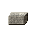
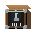
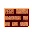
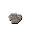
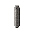

Fabrication & Components¶
539 recipes
Air Separation Unit 3
NE neon×1
neon×1
Draw the incondensable neon off the top of the main condenser of the air-separation column, where it concentrates.
re_neonRectify liquid air in a double column: counter-current distillation pulls volatile nitrogen (-196C) up and out the top, oxygen (-183C) collects at the bottom, and argon (-186C) is drawn from a side column. One feed, three pure products -- the cleanest multi-output in the plant.
asu_rectify_airCompress filtered air, scrub out CO2 and moisture (they freeze and plug the column), then chill it against the cold product streams until it condenses. Liquefying the air is the energy-hungry step; the separation that follows is nearly free.
asu_liquefy_airAluminothermic Crucible 3
Aluminothermic reduction: ignite Nb2O5 with aluminium and iron oxide. The thermite-like reaction (3 Nb2O5 + 10 Al -> 6 Nb + 5 Al2O3) runs white-hot and yields ferroniobium directly, with alumina slag floating off -- exactly how FeNb is made for steel and superalloys.
nb_aluminothermicNM niobium metal×1 SLslag×1
niobium metal×1 SLslag×1
Aluminothermic reduction of white Nb2O5 with aluminium to pure niobium metal, alumina slag floating off. Unlike the ferroniobium route this skips the iron oxide, yielding nozzle-grade metal.
re_niobium_metalReduce Ta2O5 with aluminium to a high-purity tantalum metal powder. Its huge surface area and self-healing oxide are exactly what a capacitor anode needs.
ta_reduce_powderAmine Gas Treater 1
Wash the raw gas with an amine solution to strip the acid gases: out comes sweet pipeline methane, plus the CO2 and hydrogen sulfide that each have to be dealt with separately.
ng_amine_sweetenAnode Baking Furnace 1
Bind petroleum coke with pitch and bake it into a dense, conductive block. These prebaked anodes are fed into the pots and slowly eaten as the cell runs.
al_bake_anodeAOD Converter 1
SI steel ingot×2 FEferrochrome×1 FEferronickel×1 BL
steel ingot×2 FEferrochrome×1 FEferronickel×1 BL burned lime (quicklime)×1 → SSstainless steel ingot×2 SLslag×1
burned lime (quicklime)×1 → SSstainless steel ingot×2 SLslag×1
Argon-oxygen decarburization: blow an O2/Ar mix through a chromium-bearing melt. Diluting the oxygen with argon lets carbon burn out while chromium does NOT oxidise away -- so cheap high-carbon ferrochrome can be used. Makes ~75% of the worlds stainless steel.
iron_aod_stainlessAPT Crystallizer 1
STsodium tungstate solution×2 AGammonia gas×2 → APammonium paratungstate (APT)×2 SHsodium hydroxide×1
Convert the tungstate solution to ammonium paratungstate and crystallise it out with ammonia. APT is the universal clean intermediate -- recrystallising rejects the last impurities, and some caustic is regenerated to the digester.
w_crystallize_aptAssembly Cell 72
TA TVC actuator (EMA)×1
TVC actuator (EMA)×1
SA small AC induction motor×1 TSturned steel shaft×1 ICinsulated copper wire×2 RS
small AC induction motor×1 TSturned steel shaft×1 ICinsulated copper wire×2 RS rolled steel plate×1 → TATVC actuator (EMA)×1
rolled steel plate×1 → TATVC actuator (EMA)×1
Assemble an electromechanical actuator: motor, ballscrew and position-sensing coil.
re_actuator_emaAS Air Separation Unit×1
Air Separation Unit×1
SSstainless steel sheet×6 AH autogenous heat exchanger×1 CI
autogenous heat exchanger×1 CI cryogenic insulation×2 LV
cryogenic insulation×2 LV laboratory vacuum pump×1 PR
laboratory vacuum pump×1 PR pneumatic regulator×1 → ASAir Separation Unit×1
pneumatic regulator×1 → ASAir Separation Unit×1
Station: assembler workshop
itemdb_air_separation_unit_assembler_workshopMR monoprop RCS thruster×4 CG
monoprop RCS thruster×4 CG cold-gas thruster×2 RP
cold-gas thruster×2 RP RCS propellant tank×1 SAsmall AC induction motor×2 WIwrought-iron magnet core×2 FC
RCS propellant tank×1 SAsmall AC induction motor×2 WIwrought-iron magnet core×2 FC flight computer×1 → AC
flight computer×1 → AC attitude control array×1
attitude control array×1
Station: assembler_workshop
itemdb_attitude_control_array_assembler_workshopAG acoustic glass-wool batt×2
acoustic glass-wool batt×2
GF glass-fiber roving×2 → AGacoustic glass-wool batt×2
glass-fiber roving×2 → AGacoustic glass-wool batt×2
Flame-attenuate and cross-lap the roving into a low-density glass-wool batt that traps sound.
re_batt_glasswool_acousticLI lithium-ion battery×1
lithium-ion battery×1
time=70,energyamount=130,energyunit=kJ,categoryid=assembly • Station: assembler_workshop
itemdb_battery_lithium_ion_assembler_workshopSZ silver-zinc battery×1
silver-zinc battery×1
Silver(II)-oxide cathode + zinc anode in KOH -- a high-rate silver-zinc flight battery.
re_battery_agznAB acoustic blanket×2
acoustic blanket×2
AGacoustic glass-wool batt×2 BC beta-cloth cover×1 → ABacoustic blanket×2
beta-cloth cover×1 → ABacoustic blanket×2
Quilt the glass-wool batt inside a sewn beta-cloth cover to make a fairing acoustic blanket.
re_blanket_acousticLI lithium-ion cell×1
lithium-ion cell×1
LC lithium cobalt oxide cathode×1 PCprebaked carbon anode×1 PR
lithium cobalt oxide cathode×1 PCprebaked carbon anode×1 PR polyethylene resin×1 → LIlithium-ion cell×1
polyethylene resin×1 → LIlithium-ion cell×1
Station: assembler_workshop
itemdb_cell_lithium_ion_assembler_workshopchemName=CFRP,obtain=autoclave_layup • Station: assembler_workshop
itemdb_cfrp_panel_assembler_workshopBCbeta-cloth cover×1
GFglass-fiber roving×2 → BCbeta-cloth cover×1
Weave the glass-fiber roving into a fine, non-flammable beta cloth to cover the blanket.
re_cloth_glass_betaHC helium COPV sphere×1
helium COPV sphere×1
Filament-wind carbon fiber over a titanium liner to make a composite-overwrapped helium sphere.
re_copv_sphereCH Cryo Helium Unit×1
Cryo Helium Unit×1
SSstainless steel sheet×4 AHautogenous heat exchanger×2 CIcryogenic insulation×2 LVlaboratory vacuum pump×1 → CHCryo Helium Unit×1
Station: assembler workshop
itemdb_cryo_helium_unit_assembler_workshopAA steam control valve×1 → SD
steam control valve×1 → SD standard docking port×1
standard docking port×1

aerospace aluminum alloy×4 TSturned steel shaft×2 SCStation: assembler_workshop
itemdb_docking_port_standard_assembler_workshopSAsmall AC induction motor×2 TSturned steel shaft×3 FCflight computer×1 → RR robotic regolith drill×1
robotic regolith drill×1
Station: assembler_workshop
itemdb_drill_regolith_robotic_assembler_workshopOE octaweb engine mount×1
octaweb engine mount×1
RSrolled steel beam×2 TA titanium alloy plate×2 AAaerospace aluminum alloy×2 → OEoctaweb engine mount×1
titanium alloy plate×2 AAaerospace aluminum alloy×2 → OEoctaweb engine mount×1
Weld up the octaweb structure that holds nine engines at the booster base.
re_engine_mount_octawebEB explosive bolt×2
explosive bolt×2
Charge V-grooved bolts that fracture on command.
re_explosive_boltFJ frangible joint×1
frangible joint×1
Embed a charge in a structural seam that fractures along its length.
re_frangible_jointAF autonomous flight termination×1
autonomous flight termination×1
GN GPS navigation receiver×1 LS
GPS navigation receiver×1 LS linear shaped charge×2 SZsilver-zinc battery×1 BP
linear shaped charge×2 SZsilver-zinc battery×1 BP basic PLC rack×1 → AFautonomous flight termination×1
basic PLC rack×1 → AFautonomous flight termination×1
Integrate a GPS-aided destruct controller with its own battery and cutting ordnance.
re_fts_autonomousFR Fuel Rod Assembly Line×1
Fuel Rod Assembly Line×1
ZC zircaloy cladding alloy×4 SSstainless steel sheet×2 CP
zircaloy cladding alloy×4 SSstainless steel sheet×2 CP controller program cartridge×1 LP
controller program cartridge×1 LP limit position sensor×1 SDFuel Rod Assembly Line×1
limit position sensor×1 SDFuel Rod Assembly Line×1

small DC motor×1 → FRStation: assembler workshop
itemdb_fuel_rod_assembly_line_assembler_workshopStation: assembler_workshop
itemdb_fuel_rod_uranium_enriched_assembler_workshopGC Gas Centrifuge Cascade×1
Gas Centrifuge Cascade×1
AAaerospace aluminum alloy×2 SNsintered NdFeB magnet×2 LVlaboratory vacuum pump×1 SDsmall DC motor×1 CPcontroller program cartridge×1 SSstainless steel sheet×2 → GCGas Centrifuge Cascade×1
Station: assembler workshop
itemdb_gas_centrifuge_cascade_assembler_workshopKG kerolox gas generator×1
kerolox gas generator×1
GG gas-generator chamber×1 GG
gas-generator chamber×1 GG gas-generator injector×1 ST
gas-generator injector×1 ST spark-torch igniter×1 TI
spark-torch igniter×1 TI turbine inlet manifold×1 TE
turbine inlet manifold×1 TE turbine exhaust duct×1 PT
turbine exhaust duct×1 PT propellant tap valve×2 → KGkerolox gas generator×1
propellant tap valve×2 → KGkerolox gas generator×1
Assemble the fuel-rich chamber, injector, spark torch, turbine manifold, exhaust duct and two tap valves into the open-cycle power pack that drives the turbopump.
re_gas_generator_assembleSTspark-torch igniter×1
ICinsulated copper wire×2 SN signal NPN transistor×1 RSrolled steel plate×1 → STspark-torch igniter×1
signal NPN transistor×1 RSrolled steel plate×1 → STspark-torch igniter×1
Wind a high-voltage spark exciter and electrodes into a restartable oxygen/kerosene torch igniter.
re_gg_spark_torchG/ gimbal / TVC assembly×1
gimbal / TVC assembly×1
SG spherical gimbal bearing×1 TATVC actuator (EMA)×2 → G/gimbal / TVC assembly×1
spherical gimbal bearing×1 TATVC actuator (EMA)×2 → G/gimbal / TVC assembly×1
Mount the engine on its spherical gimbal with a pair of actuators -- the complete steering joint.
re_gimbal_tvcOG optical gyroscope×1
optical gyroscope×1
GC gyro cavity block×1 HR
gyro cavity block×1 HR high-reflector cavity mirror×3 HN
high-reflector cavity mirror×3 HN helium-neon lasing gas×1 GD
helium-neon lasing gas×1 GD gas-discharge electrodes×1 FR
gas-discharge electrodes×1 FR fringe-readout photodetector×1 MD
fringe-readout photodetector×1 MD mechanical dither×1 → OGoptical gyroscope×1
mechanical dither×1 → OGoptical gyroscope×1
Optically contact three dielectric mirrors to a zero-expansion cavity block, fill it with helium-neon, strike the gas discharge and dither it so rotation reads as a beat frequency between the counter-rotating laser beams.
re_gyro_rlgHS Hf/Zr Separation Column×1
Hf/Zr Separation Column×1
SSstainless steel sheet×4 PP PVC pipe×4 TL
PVC pipe×4 TL tank level sensor×1 WI
tank level sensor×1 WI wrought-iron steam pipe×2 → HSHf/Zr Separation Column×1
wrought-iron steam pipe×2 → HSHf/Zr Separation Column×1
Station: assembler workshop
itemdb_hf_zr_separation_column_assembler_workshopStation: assembler_workshop
itemdb_hopper_regolith_bulk_assembler_workshopHR Hunter Reduction Retort×1
Hunter Reduction Retort×1
SSstainless steel sheet×6 LVlaboratory vacuum pump×1 SR boiler pressure sensor×1 → HRHunter Reduction Retort×1
boiler pressure sensor×1 → HRHunter Reduction Retort×1

silica refractory brick×4 BPStation: assembler workshop
itemdb_hunter_reduction_retort_assembler_workshopHR Hydrogen Reduction Furnace×1
Hydrogen Reduction Furnace×1
SSstainless steel sheet×4 SRsilica refractory brick×6 WIwrought-iron steam pipe×2 BPboiler pressure sensor×1 → HRHydrogen Reduction Furnace×1
Station: assembler workshop
itemdb_hydrogen_reduction_furnace_assembler_workshopTT TEA-TEB igniter×1
TEA-TEB igniter×1
Load a metered TEA-TEB charge behind a fast valve to light the engine on command.
re_igniter_unitSI standard initiator (NSI)×2
standard initiator (NSI)×2
ICinsulated copper wire×1 RE RDX energetic charge×1 RSrolled steel plate×1 → SIstandard initiator (NSI)×2
RDX energetic charge×1 RSrolled steel plate×1 → SIstandard initiator (NSI)×2
Build redundant bridgewire initiators that fire the larger pyro devices.
re_initiator_nsiPI pintle injector×1
pintle injector×1
IF injector faceplate×1 AB
injector faceplate×1 AB acoustic baffle×2 TSturned steel shaft×1 MF
acoustic baffle×2 TSturned steel shaft×1 MF mechanical face seal×1 → PIpintle injector×1
mechanical face seal×1 → PIpintle injector×1
SEPARATE PATH: build the central pintle post into the faceplate with its stability baffles.
re_injector_assembleCI composite interstage×1
composite interstage×1
Roll a vented composite interstage tube to join and later separate two stages.
re_interstageRRrobotic regolith drill×1 SAsmall AC induction motor×2 PC photovoltaic cell×2 → DI
photovoltaic cell×2 → DI demo ice ISRU extractor×1
demo ice ISRU extractor×1
Station: assembler_workshop
itemdb_isru_ice_extractor_demo_assembler_workshopAP aluminum propellant tank×1 KT
aluminum propellant tank×1 KT kerolox test rocket engine×1 ACattitude control array×1 FCflight computer×1 AAaerospace aluminum alloy×4 → RL
kerolox test rocket engine×1 ACattitude control array×1 FCflight computer×1 AAaerospace aluminum alloy×4 → RL robotic lunar lander×1
robotic lunar lander×1
Station: assembler_workshop
itemdb_lander_lunar_robotic_assembler_workshopRSrolled steel beam×8 SRsilica refractory brick×4 SCsteam control valve×2 → BL basic launch pad complex×1
basic launch pad complex×1
Station: assembler_workshop
itemdb_launch_pad_complex_basic_assembler_workshopLVlaboratory vacuum pump×1 SCsteam control valve×2 BPboiler pressure sensor×1 AAaerospace aluminum alloy×2 → BL basic life-support loop×1
basic life-support loop×1
Station: assembler_workshop
itemdb_life_support_loop_basic_assembler_workshopLSlinear shaped charge×1
Form a shaped explosive cord that cuts a clean line through metal.
re_linear_shaped_chargeWIwrought-iron magnet core×8 ICinsulated copper wire×6 RSrolled steel beam×4 SU step-up transformer×1 → LM
step-up transformer×1 → LM lunar mass driver track×1
lunar mass driver track×1
Station: assembler_workshop
itemdb_mass_driver_lunar_track_assembler_workshopCS CFRP sandwich panel×2
CFRP sandwich panel×2
Lay up carbon-fiber face sheets over an aluminum honeycomb core and cure into a sandwich panel.
re_panel_sandwichPA payload adapter×1
payload adapter×1
Machine the adapter cone, Marman clamp band and separation springs that hold and release the satellite.
re_payload_adapterPF payload fairing×1
payload fairing×1
Bond two sandwich-panel half-shells, line them with acoustic blankets and fit pneumatic jettison pushers.
re_fairingPCphotovoltaic cell×12 AAaerospace aluminum alloy×4 SD step-down transformer×1 CBcopper bus bar×1 → LS
step-down transformer×1 CBcopper bus bar×1 → LS lunar solar power plant×1
lunar solar power plant×1
Station: assembler_workshop
itemdb_power_plant_lunar_solar_assembler_workshopSC staged-combustion preburner×1
staged-combustion preburner×1
OR oxidizer-rich preburner×1 PI
oxidizer-rich preburner×1 PI preburner injector×1 STspark-torch igniter×1 HG
preburner injector×1 STspark-torch igniter×1 HG hot-gas manifold×1 → SCstaged-combustion preburner×1
hot-gas manifold×1 → SCstaged-combustion preburner×1
Assemble the oxidizer-rich preburner, its injector and spark torch, and the hot-gas manifold into the closed-cycle power pack.
re_preburner_staged_assembleTP tank pressurization system×1
tank pressurization system×1
HELIUM ROUTE: charge the COPV with helium and plumb it through regulators and check valves.
re_pressurization_heliumTPtank pressurization system×1
AHautogenous heat exchanger×1 PRpneumatic regulator×1 RSrolled steel plate×1 → TPtank pressurization system×1
AUTOGENOUS ROUTE: plumb the heat exchanger back into the ullage -- no helium needed.
re_pressurization_autogenousRPRCS propellant tank×1
MONOPROPELLANT: load a bladder tank with hydrazine and pressurant.
re_rcs_tank_monopropRPRCS propellant tank×1
ASaluminum sheet×1 PRpneumatic regulator×1 HY hydrazine×1 DT
hydrazine×1 DT dinitrogen tetroxide×1 → RPRCS propellant tank×1
dinitrogen tetroxide×1 → RPRCS propellant tank×1
BIPROPELLANT: load hydrazine and N2O4 for higher-performance maneuvers.
re_rcs_tank_bipropCGcold-gas thruster×2
Build simple cold-gas nitrogen thrusters for gentle attitude control.
re_rcs_thruster_coldgasMRmonoprop RCS thruster×1
S4 Shell-405 catalyst×1 IS
Shell-405 catalyst×1 IS Inconel superalloy ingot×1 SCsteam control valve×1 → MRmonoprop RCS thruster×1
Inconel superalloy ingot×1 SCsteam control valve×1 → MRmonoprop RCS thruster×1
Build a monopropellant thruster: catalyst bed, chamber and fast valve.
re_rcs_thruster_monopropRA Reactor Assembly Bay×1
Reactor Assembly Bay×1
RSrolled steel beam×8 SSstainless steel sheet×6 RC reinforced concrete×4 SAsmall AC induction motor×1 LPlimit position sensor×2 → RAReactor Assembly Bay×1
reinforced concrete×4 SAsmall AC induction motor×1 LPlimit position sensor×2 → RAReactor Assembly Bay×1
Station: assembler workshop
itemdb_reactor_assembly_bay_assembler_workshopEU enriched uranium fuel rod×4 RSrolled steel plate×6 SCsteam control valve×2 LVlaboratory vacuum pump×1 TP
enriched uranium fuel rod×4 RSrolled steel plate×6 SCsteam control valve×2 LVlaboratory vacuum pump×1 TP three-phase AC generator×1 → LW
three-phase AC generator×1 → LW light-water nuclear reactor×1
light-water nuclear reactor×1
Station: assembler_workshop
itemdb_reactor_nuclear_light_water_assembler_workshopOE octaweb engine cluster×1
octaweb engine cluster×1
FQ flight-qualified kerolox engine×9 OEoctaweb engine mount×1 → OEoctaweb engine cluster×1
flight-qualified kerolox engine×9 OEoctaweb engine mount×1 → OEoctaweb engine cluster×1
Mount nine flight engines into the octaweb -- the complete first-stage thrust section.
re_cluster_octawebFQflight-qualified kerolox engine×1
KTkerolox test rocket engine×1 DL distilled LOX propellant×20 RK
distilled LOX propellant×20 RK refined kerosene propellant×20 → FQflight-qualified kerolox engine×1
refined kerosene propellant×20 → FQflight-qualified kerolox engine×1
obtain=static_fire_acceptance • Station: assembler_workshop
itemdb_rocket_engine_kerolox_flight_assembler_workshopOEoctaweb engine cluster×1 FQflight-qualified kerolox engine×2 FS fueled stage tank×3 ST
fueled stage tank×3 ST stage thrust structure×3 CIcomposite interstage×2 PFpayload fairing×1 PApayload adapter×1 GC
stage thrust structure×3 CIcomposite interstage×2 PFpayload fairing×1 PApayload adapter×1 GC guidance coil array×1 ACattitude control array×1 FCflight computer×1 AFautonomous flight termination×1 SS
guidance coil array×1 ACattitude control array×1 FCflight computer×1 AFautonomous flight termination×1 SS stage separation system×2 → OT
stage separation system×2 → OT orbital three-stage rocket stack×1
orbital three-stage rocket stack×1
Station: assembler_workshop
itemdb_rocket_stack_orbital_three_stage_assembler_workshopAAaerospace aluminum alloy×4 SRsilica refractory brick×2 ACattitude control array×1 FCflight computer×1 → SR sample return capsule×1
sample return capsule×1
Station: assembler_workshop
itemdb_sample_return_capsule_assembler_workshopPCphotovoltaic cell×2 MP microwave power beamer×1 FCflight computer×1 ACattitude control array×1 AAaerospace aluminum alloy×2 → BC
microwave power beamer×1 FCflight computer×1 ACattitude control array×1 AAaerospace aluminum alloy×2 → BC basic comms satellite×1
basic comms satellite×1
Station: assembler_workshop
itemdb_satellite_comms_basic_assembler_workshopPCphotovoltaic cell×2 FCflight computer×1 ACattitude control array×1 AAaerospace aluminum alloy×2 → TD technology demonstrator satellite×1
technology demonstrator satellite×1
Station: assembler_workshop
itemdb_satellite_tech_demo_assembler_workshopSN separation nut×2
separation nut×2
Build pyro nuts that release preloaded bolts without rebounding.
re_separation_nutSSstage separation system×1
FJfrangible joint×1 EBexplosive bolt×4 SNseparation nut×2 LSlinear shaped charge×1 → SSstage separation system×1
Bundle the staging ordnance that parts one stage from the next.
re_separation_systemSC Siemens CVD Reactor×1
Siemens CVD Reactor×1
SSstainless steel sheet×4 BG borosilicate glass tube×2 CA
borosilicate glass tube×2 CA carbon anode block×2 SUstep-up transformer×1 LVlaboratory vacuum pump×1 CBcopper bus bar×4 → SCSiemens CVD Reactor×1
carbon anode block×2 SUstep-up transformer×1 LVlaboratory vacuum pump×1 CBcopper bus bar×4 → SCSiemens CVD Reactor×1
Station: assembler workshop
itemdb_siemens_cvd_reactor_assembler_workshopPCphotovoltaic cell×24 AAaerospace aluminum alloy×8 MPmicrowave power beamer×1 → HS huge SPS solar array×1
huge SPS solar array×1
Station: assembler_workshop
itemdb_sps_solar_array_huge_assembler_workshopAAaerospace aluminum alloy×4 BLbasic life-support loop×1 SDstandard docking port×2 FCflight computer×1 → SC station core module×1
station core module×1
Station: assembler_workshop
itemdb_station_module_core_assembler_workshopPCphotovoltaic cell×8 AAaerospace aluminum alloy×4 RSrolled steel beam×2 SDstep-down transformer×1 → SS station solar truss module×1
station solar truss module×1
Station: assembler_workshop
itemdb_station_module_solar_truss_assembler_workshopAAaerospace aluminum alloy×4 ASaluminum sheet×2 TAtitanium alloy plate×2 TPtank pressurization system×1 AS anti-slosh baffle×2 CIcryogenic insulation×2 → APaluminum propellant tank×1
anti-slosh baffle×2 CIcryogenic insulation×2 → APaluminum propellant tank×1
Station: assembler_workshop
itemdb_tank_propellant_aluminum_assembler_workshopFSfueled stage tank×1
APaluminum propellant tank×1 DLdistilled LOX propellant×30 RKrefined kerosene propellant×13 → FSfueled stage tank×1
obtain=propellant_load • Station: assembler_workshop
itemdb_tank_propellant_fueled_assembler_workshopRT regen thrust chamber×1
regen thrust chamber×1
MC main combustion chamber×1 RN
main combustion chamber×1 RN regen nozzle bell×1 NN
regen nozzle bell×1 NN niobium nozzle extension×1 ST
niobium nozzle extension×1 ST sintered tungsten rod×1 → RTregen thrust chamber×1
sintered tungsten rod×1 → RTregen thrust chamber×1
SEPARATE PATH: stack chamber, tungsten throat, bell and niobium extension into a firing thrust chamber.
re_thrust_chamber_assembleSTstage thrust structure×1
RSrolled steel beam×2 TAtitanium alloy plate×1 AAaerospace aluminum alloy×2 → STstage thrust structure×1
Build the thrust box and aft skirt that carry engine thrust into the stage airframe.
re_thrust_structureKT kerolox turbopump×1
kerolox turbopump×1
PI pump inducer×1 CI
pump inducer×1 CI centrifugal impeller×2 IT
centrifugal impeller×2 IT Inconel turbine rotor×1 TSturned steel shaft×1 CB
Inconel turbine rotor×1 TSturned steel shaft×1 CB cryogenic ball bearing×2 LS
cryogenic ball bearing×2 LS labyrinth seal×1 → KTkerolox turbopump×1
labyrinth seal×1 → KTkerolox turbopump×1
SEPARATE PATH: assemble pre-made parts onto a common shaft into a complete turbopump.
re_turbopump_assembleHP high-pressure turbopump×1
high-pressure turbopump×1
KTkerolox turbopump×1 CIcentrifugal impeller×1 PIpump inducer×1 ISInconel superalloy ingot×2 → HPhigh-pressure turbopump×1
Add a boost stage and a higher-pressure main impeller to the standard turbopump so it reaches the many-hundred-bar discharge a staged cycle needs.
re_turbopump_staged_hpUC Uranium Conversion Reactor×1
Uranium Conversion Reactor×1
SSstainless steel sheet×6 PPPVC pipe×4 PRpneumatic regulator×1 AHautogenous heat exchanger×1 → UCUranium Conversion Reactor×1
Station: assembler workshop
itemdb_uranium_conversion_reactor_assembler_workshopVA Vacuum Arc Remelt Furnace×1
Vacuum Arc Remelt Furnace×1
SSstainless steel sheet×4 LVlaboratory vacuum pump×1 SUstep-up transformer×1 CBcopper bus bar×4 AHautogenous heat exchanger×2 → VAVacuum Arc Remelt Furnace×1
Station: assembler workshop
itemdb_vacuum_arc_remelt_furnace_assembler_workshopBasic Oxygen Furnace 1
Basic oxygen (Linz-Donawitz) process: blow pure O2 onto molten pig iron to oxidise out carbon, silicon, manganese and phosphorus (the heat is autogenous). ~25% scrap cools the blow; burnt lime fluxes P and S into a basic slag. The dominant primary steel route worldwide.
iron_bof_steelBayer Digester 1
Cook the bauxite in hot, pressurised caustic soda. The alumina dissolves as sodium aluminate while iron oxide, silica and titania refuse to and settle out as red mud: ~1-1.5 t of red mud per t of alumina, the industry's great unsolved waste stream. Decant the clear liquor off the mud.
al_digest_bauxiteBeehive Coke Oven 2
Station: coke_oven_beehive • Byproduct: coal_tar,gas
itemdb_coke_fuel_coke_oven_beehiveStation: coke oven (beehive)
itemdb_coal_tar_coke_oven_beehiveBessemer Converter 1
Station: bessemer converter • Byproduct: refining_slag
itemdb_steel_ingot_bessemer_converter_basicBlast Furnace 3
LOlead oxide sinter×2 CF coke fuel×1 LF
coke fuel×1 LF limestone flux×1 → CLcrude lead bullion×2 SLslag×1 CD
limestone flux×1 → CLcrude lead bullion×2 SLslag×1 CD carbon dioxide gas×1
carbon dioxide gas×1
Reduce the lead sinter with coke in a blast furnace to crude bullion. The silver in the ore reports almost entirely into the molten lead; iron and rock leave as slag.
pb_blast_reduceCharge sinter, coke and flux into the blast furnace. Coke burns to CO, which reduces the oxide (Fe2O3/Fe3O4 + CO -> Fe + CO2) as it descends; limestone fluxes the gangue to a fluid slag. Tap ~4%-carbon pig iron. A cleaner, more permeable burden than raw crushed ore.
iron_blast_sinterStation: small blast furnace • Byproduct: slag_ironmaking
itemdb_pig_iron_ingot_blast_furnace_smallBrine Treatment Unit 4
Pass the brine through ion-exchange softening to strip calcium and magnesium to ppb levels. Skip this and the cell membrane fouls within days -- brine purity is the hidden discipline of a chlor-alkali plant.
ca_purify_brineDissolve rock salt in water to a saturated brine -- the raw feedstock for the whole plant. Salt is cheap and the sea is endless; the cost here is all electricity downstream.
ca_dissolve_brineStir mined rock salt into water until no more will dissolve, giving a saturated brine. This is the hand way into the whole sodium and chlorine tree: it uses salt you can chip straight out of the ground, so the plant no longer waits on salt that only comes back as a by-product of titanium and zirconium work.
salt_dissolve_brine_manualNC NPK compound fertilizer×3
NPK compound fertilizer×3
AN ammonium nitrate×1 SS
ammonium nitrate×1 SS single superphosphate×1 MO
single superphosphate×1 MO muriate of potash (KCl)×1 → NCNPK compound fertilizer×3
muriate of potash (KCl)×1 → NCNPK compound fertilizer×3
Blend the nitrogen source (ammonium nitrate), the phosphorus source (superphosphate), and the potassium source (muriate of potash) into one balanced NPK fertilizer.
npk_blendCamp Marker 18
AB adobe brick×4
adobe brick×4
Mould clay, sand, and straw and dry the bricks in the sun, no kiln needed. The straw stops cracking. Weaker than fired brick and unhappy in steady rain.
bld_form_adobeCM cement mortar×3
cement mortar×3
Mix Portland cement with about three parts sand and water. It sets by hydration in hours and ends up much stronger than lime mortar.
bld_mix_cement_mortarGC green clay brick×4
green clay brick×4
Press a stiff clay-and-sand mix into moulds and let it dry. The sand temper keeps the brick from cracking as it shrinks. Still needs firing to last.
bld_mold_green_brickCB cob block×3
cob block×3
Knead clay, sand, and straw into a stiff earth and build it up by hand. Slow, but the thick walls hold heat and cost almost nothing.
bld_form_cobCC cured concrete×2
cured concrete×2
WC wet concrete×2 → CCcured concrete×2
wet concrete×2 → CCcured concrete×2
Leave fresh concrete damp to cure. Strength comes from a slow chemical set, not from drying, and keeps building for weeks. The long wait is the price of its strength.
bld_cure_concreteWCwet concrete×4
Mix cement, sand, and gravel to the one-two-three rule with water. Workable only briefly: the water has started the set, so place it before it stiffens.
bld_mix_concreteBD blue dye×2
blue dye×2
Mash scarce gentian petals and simmer them with a lime mordant into a precious blue dye.
dye_boil_blueBD brown dye×2
brown dye×2
Boil tannin-rich bark in water to draw out a cheap, colourfast brown dye.
dye_boil_brownPD purple dye×2
purple dye×2
Mash violet and lavender petals and simmer them with a lime mordant into a soft purple dye.
dye_boil_purpleRD red dye×2
red dye×2
Mash red poppy petals and simmer them in water with a lime mordant into a red dye.
dye_boil_redYD yellow dye×2
yellow dye×2
Mash yellow petals and simmer them in water with a pinch of slaked lime to fix the colour into a yellow dye.
dye_boil_yellowLM lime mortar×3
lime mortar×3
Cut slaked lime with about three parts sand and water. It sets slowly by taking carbon dioxide from the air, Ca(OH)2 + CO2 back to limestone, so it stays workable a long time.
bld_mix_lime_mortarRE rammed earth block×3
rammed earth block×3
Tamp damp, gravelly earth hard inside a form until it sets like soft stone. Very strong under load, as long as it is kept dry.
bld_ram_earthRCreinforced concrete×3
WCwet concrete×3 SR steel rebar×1 → RCreinforced concrete×3
steel rebar×1 → RCreinforced concrete×3
Lay rebar in the form and pour concrete around it. Concrete takes the squeeze, steel takes the pull, and the long cure locks them together.
bld_cast_reinforcedTR thatched roof×1
thatched roof×1
Lay bundled straw thick over light battens. Cheap and warm, but it rots and burns.
bld_build_roof_thatchTRthatched roof×1
Lash bundles of dried thatch in overlapping rows to a stick frame with rope, working bottom to top so each row sheds rain over the one below. Keeps the weather off your bedroll and the wet off your fire. It eats a lot of cordage, so make rope first.
roof_thatch_build_manualSL slaked lime×2
slaked lime×2
Quench quicklime with water: CaO + H2O gives Ca(OH)2 and real heat, so it hisses and falls to powder. The binder for mortar and wash.
bld_slake_limeHS hard soap×3 CG
hard soap×3 CG crude glycerin×1
crude glycerin×1
Boil lye with rendered tallow until it saponifies, then salt it out into a hard bar soap; crude glycerin separates off as a by-product.
soap_boil_hardCarbonation Reactor 18
ME methylenedianiline×1
methylenedianiline×1
AN aniline×2 FO
aniline×2 FO formaldehyde×1 → MEmethylenedianiline×1
formaldehyde×1 → MEmethylenedianiline×1
Condense two anilines with formaldehyde into methylenedianiline (MDA).
re_mdaRERDX energetic charge×2
Nitrate with mixed acid into a cast RDX/HMX-class high explosive -- the shared energetic for pyro devices and gunpowder.
re_energetic_rdxFOformaldehyde×1
Oxidise methanol over a silver catalyst to formaldehyde.
re_formaldehydeGL glycerol×1
glycerol×1
Boil tallow with caustic soda (saponification); the sweet liquor decanted off the soap is glycerol.
re_glycerolTT TEA-TEB charge×2
TEA-TEB charge×2
TR triethylaluminum×3 TR
triethylaluminum×3 TR triethylborane×1 → TTTEA-TEB charge×2
triethylborane×1 → TTTEA-TEB charge×2
Blend triethylaluminum with about 15 percent triethylborane under a nitrogen blanket to make the pyrophoric TEA-TEB starter fluid.
re_tea_teb_compoundCIcryogenic insulation×3
RP rigid polyurethane foam×2 AC
rigid polyurethane foam×2 AC agglomerated cork×1 → CIcryogenic insulation×3
agglomerated cork×1 → CIcryogenic insulation×3
Spray rigid polyurethane foam and back it with agglomerated cork to insulate the cryogenic tank wall (SOFI + cork TPS).
re_insulation_foamPM polymeric MDI×1
polymeric MDI×1
MEmethylenedianiline×1 PH phosgene×2 → PMpolymeric MDI×1
phosgene×2 → PMpolymeric MDI×1
Phosgenate MDA's amine groups into the isocyanate groups of polymeric MDI.
re_pmdiBubble CO2 through lithium hydroxide to drop battery-grade lithium carbonate: 2 LiOH + CO2 -> Li2CO3 + H2O. The classic lithium-ion feedstock.
li_carbonateDTdinitrogen tetroxide×1
NA nitric acid×2 → DTdinitrogen tetroxide×1
nitric acid×2 → DTdinitrogen tetroxide×1
Concentrate nitrogen oxides from nitric acid into storable dinitrogen tetroxide.
re_n2o4NI nitrobenzene×1
nitrobenzene×1
BE benzene×1 NAnitric acid×1 → NInitrobenzene×1
benzene×1 NAnitric acid×1 → NInitrobenzene×1
Nitrate benzene with nitric acid to nitrobenzene.
re_nitrobenzenePHphosgene×1
Combine carbon monoxide with chlorine over carbon to make phosgene (sealed reactor).
re_phosgenePP polyether polyol×1
polyether polyol×1
PO propylene oxide×3 GLglycerol×1 → PPpolyether polyol×1
propylene oxide×3 GLglycerol×1 → PPpolyether polyol×1
Grow propylene-oxide chains out from a glycerol initiator into a hydroxyl-terminated polyether polyol.
re_polyether_polyolRPrigid polyurethane foam×2
React polyol with polymeric MDI; the water blows CO2 to cure a rigid closed-cell SOFI foam.
re_pu_foam_rigidPOpropylene oxide×2
Epoxidise propylene with oxygen to the reactive epoxide propylene oxide.
re_propylene_oxideAC ammonium chloride×2
ammonium chloride×2
Neutralise ammonia liquor with hydrochloric acid to crystallise ammonium chloride.
re_ammonium_chlorideTD titanium dioxide×1
titanium dioxide×1
Burn titanium tetrachloride in oxygen to white titanium dioxide (chlorine recycled back to the chlorinator).
re_titaniaTRtriethylaluminum×2
Ziegler direct process: add hydrogen and ethylene across aluminum metal to build triethylaluminum.
re_triethylaluminumTRtriethylborane×1
BT boron trifluoride×1 TRtriethylaluminum×1 → TRtriethylborane×1
boron trifluoride×1 TRtriethylaluminum×1 → TRtriethylborane×1
Transmetalate: triethylaluminum hands its ethyl groups to boron trifluoride, yielding triethylborane.
re_triethylboraneCarving Bench 8
TB timber beam×1
timber beam×1
Peg a timber span to carry floors and roofs across an opening to the posts at each end.
bld_build_beam_timberTF timber floor×1
timber floor×1
Deck timber joists with planks to span a short gap. Light, but it droops under heavy load.
bld_build_floor_timberHaft an obsidian micro-blade to a carved wooden handle: a surgical-grade scalpel whose edge cuts between cells for clean, low-scarring incisions.
ob_make_scalpelTP timber post×1
timber post×1
Peg a squared post that carries weight straight down. Cheap and quick, but weak against sideways push.
bld_build_pillar_timberTR timber ramp×1
timber ramp×1
Plank a timber ramp to move carts, animals, and yourself up a level without steps.
bld_build_ramp_timberTR timber roof×1
timber roof×1
Plank a timber roof over a beam frame: solid, weather-tight cover, still flammable.
bld_build_roof_timberTS timber stair×1
timber stair×1
Peg a light timber stair between floors, easy to build and to replace.
bld_build_stair_timberTF timber-frame wall×1
timber-frame wall×1
Peg a timber frame and sheathe it in planks. Light and fast, but it carries less and it burns.
bld_build_wall_timberCaustic Digester Autoclave 3
LS lithium sulfate liquor×2 SHsodium hydroxide×2 → LHlithium hydroxide monohydrate×2 SSsodium sulfate×1
lithium sulfate liquor×2 SHsodium hydroxide×2 → LHlithium hydroxide monohydrate×2 SSsodium sulfate×1
Causticise the liquor with caustic soda: Li2SO4 + 2 NaOH -> 2 LiOH + Na2SO4. The lithium hydroxide crystallises out and the sodium sulfate byproduct is recovered as a salable salt.
li_causticizeStir lime into magnesium-bearing brine; magnesium drops out as a milky Mg(OH)2 precipitate, the same trick used to win magnesium from seawater.
mg_precipitate_hydroxideBoil wolframite in hot caustic soda under pressure: (Fe,Mn)WO4 + 2 NaOH -> Na2WO4 + Fe/Mn hydroxide slag. Tungsten dissolves as sodium tungstate, leaving the iron and manganese behind -- the first and biggest purity gain.
w_digest_wolframiteCaustic Evaporator 1
Boil the weak cell liquor down to ~50% caustic soda, recovering the water. Evaporation is energy-hungry in its own right, which is why caustic is sold by the tonne, not the litre.
ca_concentrate_causticCement Ball Mill 1
Grind clinker with a few percent raw gypsum as a set-retarder: Portland cement. Without that gypsum the cement would flash-set in the mixer before you could pour it.
gyp_grind_portlandClaus Sulfur Unit 1
Run the toxic H2S through a Claus unit: 2 H2S + O2 -> 2 S + 2 H2O. A hazard becomes a product -- this is where most of the world's sulfur actually comes from.
ng_claus_sulfurClay Casting Pit 5
AC Aluminothermic Crucible×1
Aluminothermic Crucible×1
SC small clay crucible×2 SRsilica refractory brick×4 HI
small clay crucible×2 SRsilica refractory brick×4 HI hammered iron plate×2 → ACAluminothermic Crucible×1
hammered iron plate×2 → ACAluminothermic Crucible×1
Station: clay casting pit
itemdb_aluminothermic_crucible_clay_casting_pitCB concrete block (CMU)×3
concrete block (CMU)×3
WCwet concrete×2 → CBconcrete block (CMU)×3
Cast fresh concrete in a hollow mould and cure it into the grey building block: fast, consistent, and strong.
bld_cast_cmuCast blister/fire-refined copper into flat anodes for the electrorefining tankhouse.
cu_cast_anodeSlurry plaster with water between paper sheets and let it re-hydrate to set rock-hard: gypsum board. The reaction is just the calcination run backwards.
gyp_cast_boardCM cast magnesium part×1
cast magnesium part×1
Station: clay_casting_pit
itemdb_magnesium_casting_clay_casting_pitContact Converter (V2O5 beds, DCDA) 10
The Sohio process: react propylene, ammonia and air in one pass over a bismuth-molybdate catalyst to make acrylonitrile and water (with a little HCN and acetonitrile as real-world by-products).
acrylonitrile_ammoxidationCU cumene×1
cumene×1
BEbenzene×1 PR propylene×1 → CUcumene×1
propylene×1 → CUcumene×1
Alkylate benzene with propylene over an acid catalyst to make cumene (isopropylbenzene).
cumene_alkylateUR urea×1 RW
urea×1 RW raw water×1
raw water×1
Combine ammonia with carbon dioxide under pressure to make urea and water (2 ammonia + 1 carbon dioxide makes 1 urea + 1 water).
urea_synthesisAGammonia gas×4 OGoxygen gas×5 PG platinum gauze catalyst×1 → NO
platinum gauze catalyst×1 → NO nitric oxide×4 RWraw water×6 PGplatinum gauze catalyst×1
nitric oxide×4 RWraw water×6 PGplatinum gauze catalyst×1
Burn ammonia in air over the platinum screen to make nitric oxide and water (4 ammonia + 5 oxygen makes 4 nitric oxide + 6 water). The screen is required but passes through untouched.
ostwald_ammonia_oxidationND nitrogen dioxide×2
nitrogen dioxide×2
Let nitric oxide meet more air to form brown nitrogen dioxide (2 nitric oxide + 1 oxygen makes 2 nitrogen dioxide).
ostwald_no_to_no2Catalytic oxidation over vanadium(V) oxide beds: 2 SO2 + O2 <=> 2 SO3 (dH=-196 kJ/mol), ~450C and 1-2 atm. Exothermic + reversible, so heat is pulled between beds; double-contact/double-absorption (DCDA) pushes ~98%+ conversion and keeps SO2 stack emissions low.
acid_so2_to_so3VC vinyl chloride monomer×2 HAhydrochloric acid gas×2
vinyl chloride monomer×2 HAhydrochloric acid gas×2
Crack ethylene dichloride to vinyl chloride, releasing hydrogen chloride that is recycled back into chlorine chemistry.
vcm_crackPH phenol×1 AC
phenol×1 AC acetone×1
acetone×1
The cumene process: oxidise cumene in air to its hydroperoxide, then cleave it with acid. One pass yields phenol and acetone together -- conveniently the two halves of bisphenol-A.
cumene_process_phenolPRpolyethylene resin×2
ET ethylene×4 → PRpolyethylene resin×2
ethylene×4 → PRpolyethylene resin×2
Link ethylene units into polyethylene resin.
pe_polymerizePR polypropylene resin×2
polypropylene resin×2
PRpropylene×4 → PRpolypropylene resin×2
Link propylene units into polypropylene resin over a Ziegler-Natta catalyst.
pp_polymerizeCopper Converter (Peirce-Smith) 2
Peirce-Smith two-blow. Slag blow: 2FeS + 3O2 -> 2FeO + 2SO2, then 2FeO + SiO2 -> fayalite slag. Copper blow: Cu2S + O2 -> 2Cu + SO2. Taps blister copper, ~98-99.5% Cu.
cu_convert_blisterNF nickel furnace matte×2 OGoxygen gas×1 → NCnickel converter matte (Ni3S2)×1 SLslag×1 SDsulfur dioxide gas×1
nickel furnace matte×2 OGoxygen gas×1 → NCnickel converter matte (Ni3S2)×1 SLslag×1 SDsulfur dioxide gas×1
Blow air/oxygen through the molten matte in a Peirce-Smith converter to oxidise out the remaining iron (slagged with silica), leaving high-grade Ni3S2 converter matte and more SO2 for the acid plant.
nis_converterCryogenic Helium Unit 1
Chill the sweet gas until everything but helium liquefies (nitrogen rejection). You process a huge volume of gas to skim off a little crude helium -- but natural gas is the only place on Earth helium is concentrated enough to catch.
ng_cryo_recover_heliumCupellation Hearth 1
Cupel the crust under an air blast: zinc and lead oxidise to litharge and are absorbed/skimmed, leaving a noble button of dore silver. The oldest assay there is.
pb_cupellationCzochralski Crystal Puller 1
Melt the polysilicon and pull a single crystal: dip a seed into the melt and draw it slowly upward while rotating, so one continuous, flawless lattice grows from the bath. The whole ingot is one crystal.
si_czochralski_ingotDisc Pelletizer 2
Roll the chromite fines into green balls on the disc and fire them hard in the induration kiln. Indurated pellets keep the furnace burden permeable so reducing gas can climb through it.
fcr_pelletize_chromiteRoll moist concentrate with ~1% bentonite binder (clay) into green balls on a disc, then indurate (fire) them hard. Uniform, high-Fe, high-strength pellets -- the ideal direct-reduction feed.
iron_pelletizeDRI Shaft Furnace 1
Solid-state reduction: pellets meet coal/CO in a shaft or rotary kiln below irons melting point. Oxygen leaves as CO2 while the metal never liquefies, yielding porous metallic sponge iron (DRI). The low-energy, scrap-substitute charge for electric-arc steel.
iron_dri_coalDrying Rack 4
CF cured fox fur×1
cured fox fur×1
Scrape, bark-cure and work a fox pelt until the fur stays soft and supple.
tex_cure_fur_foxCW cured wolf fur×1
cured wolf fur×1
Scrape, bark-cure and work a wolf pelt into a thick, warm fur.
tex_cure_fur_wolfWW washed wool×1
washed wool×1
Scour raw wool in warm water to wash out grease and dirt, then lay it out to dry.
tex_wash_wool_rawWWwashed wool×1
Scour a raw fleece in warm water to wash out lanolin and dirt, then dry it.
tex_wash_wool_fleeceEarthen Kiln 3
Station: earthen_kiln_updraft • Byproduct: CO2
itemdb_burned_lime_quicklime_earthen_kiln_updraftFC fired clay brick×4
fired clay brick×4
GCgreen clay brick×4 → FCfired clay brick×4
Fire dried green bricks near a thousand degrees until the clay sinters hard and water-resistant. Feed the kiln from its fuel slot.
bld_fire_brickCR clay roof tile×4
clay roof tile×4
Press thin clay tiles with an overlap and fire them like brick. Heavy, but they outlast any thatch or shingle.
bld_fire_roof_tileElectric Arc Furnace 27
chemName=Ti-6Al-4V,formula=Ti6Al4V,elements=Ti:9|Al:1,obtain=var_alloying • Station: arc_furnace_electric
itemdb_alloy_ti_6al_4v_arc_furnace_electricAlloy nuclear-grade zirconium with ~1.5% tin and a trace of iron/chromium/nickel (carried in by the steel) to make Zircaloy -- the corrosion-resistant, neutron-transparent cladding that sheathes reactor fuel.
zr_alloy_zircaloychemName=Zircaloy,formula=ZrSnFeCr,elements=Zr:9|Sn:1,obtain=vim_zircaloy • Station: arc_furnace_electric
itemdb_alloy_zircaloy_arc_furnace_electricchemName=CarbonFiber,formula=C,elements=C:1,obtain=pan_carbonize • Station: arc_furnace_electric
itemdb_carbon_fiber_arc_furnace_electricchemName=Cryolite,formula=Na3AlF6,elements=Na:3|Al:1|F:6,obtain=hf_alumina_naoh • Station: arc_furnace_electric
itemdb_cryolite_arc_furnace_electricchemName=Synthetic kerosene • Station: arc_furnace_electric
itemdb_fuel_kerosene_synthetic_arc_furnace_electricchemName=Uranium dioxide,formula=UO2 • Station: arc_furnace_electric
itemdb_fuel_pellet_uo2_arc_furnace_electricchemName=HydrochloricAcid,formula=HCl,elements=H:1|Cl:1,obtain=h2_cl2_synthesis • Station: arc_furnace_electric
itemdb_gas_hcl_arc_furnace_electricchemName=Synthesis gas,formula=CO+H2 • Station: arc_furnace_electric
itemdb_gas_syngas_arc_furnace_electricchemName=Inconel718,formula=NiCrFe,elements=Ni:5|Cr:2|Fe:2|Nb:1,obtain=vim_var • Station: arc_furnace_electric
itemdb_inconel_ingot_arc_furnace_electricLA lithium-aluminosilicate melt×1
lithium-aluminosilicate melt×1
SF synthetic fused silica×4 ALalumina×1 LClithium carbonate (battery grade)×1 TDtitanium dioxide×1 → LAlithium-aluminosilicate melt×1
synthetic fused silica×4 ALalumina×1 LClithium carbonate (battery grade)×1 TDtitanium dioxide×1 → LAlithium-aluminosilicate melt×1
Melt fused silica with alumina and lithium carbonate, with a little titania as a nucleating agent, into a lithium-aluminosilicate glass blank.
re_las_glass_meltMelt sponge iron down to nearly pure, very-low-carbon iron ingots -- electromagnet cores and clean alloying stock. Gangue floats off as a little slag.
iron_melt_driStation: arc_furnace_electric
itemdb_propellant_kerosene_refined_arc_furnace_electricStation: arc_furnace_electric
itemdb_propellant_lox_distilled_arc_furnace_electricchemName=StainlessSteel,formula=FeNiCr,elements=Fe:10|Cr:2|Ni:1,obtain=aod_eaf • Station: arc_furnace_electric
itemdb_stainless_steel_ingot_arc_furnace_electricElectric-arc furnace: strike an arc onto a charge of sponge iron and scrap, melt and refine with a lime slag. The recycling route -- flexible, scrap-fed, and the basis for most specialty and low-CO2 steel.
iron_eaf_steelchemName=Titanium,formula=Ti,elements=Ti:1,obtain=vacuum_arc_remelt • Station: arc_furnace_electric
itemdb_titanium_ingot_arc_furnace_electricchemName=Titanium,formula=Ti,elements=Ti:1,obtain=hunter_process • Station: arc_furnace_electric
itemdb_titanium_sponge_arc_furnace_electricRI chlorine gas×1 CFcoke fuel×2 → TT
chlorine gas×1 CFcoke fuel×2 → TT titanium tetrachloride×1 CDcarbon dioxide gas×1
titanium tetrachloride×1 CDcarbon dioxide gas×1

raw ilmenite ore×2 CGchemName=TitaniumTetrachloride,formula=TiCl4,elements=Ti:1|Cl:4,obtain=ilmenite_chlorination • Station: arc_furnace_electric
itemdb_titanium_tetrachloride_arc_furnace_electricHeat tungsten powder with carbon until it takes up carbon as tungsten carbide: W + C -> WC. Near diamond-hard, but still just a powder -- it needs a binder to become a tool.
w_carburize_wcchemName=TungstenTrioxide,formula=WO3,elements=W:1|O:3,obtain=apt_calcine • Station: arc_furnace_electric
itemdb_tungsten_oxide_arc_furnace_electricchemName=Tungsten,formula=W,elements=W:1,obtain=h2_reduction_wo3 • Station: arc_furnace_electric
itemdb_tungsten_powder_arc_furnace_electricchemName=Tungsten,formula=W,elements=W:1,obtain=press_sinter_swage • Station: arc_furnace_electric
itemdb_tungsten_sintered_rod_arc_furnace_electricchemName=Uranium hexafluoride,formula=UF6 • Station: arc_furnace_electric
itemdb_uf6_uranium_hexafluoride_arc_furnace_electricchemName=Yellowcake,formula=U3O8 • Station: arc_furnace_electric • Byproduct: waste_tailings
itemdb_yellowcake_u3o8_arc_furnace_electricchemName=Zirconium,formula=Zr,elements=Zr:1,obtain=kroll_zrcl4 • Station: arc_furnace_electric
itemdb_zirconium_sponge_arc_furnace_electricRZraw zircon ore×1 CGchlorine gas×1 CFcoke fuel×2 → ZT zirconium tetrachloride×1 CDcarbon dioxide gas×1
zirconium tetrachloride×1 CDcarbon dioxide gas×1
chemName=ZirconiumTetrachloride,formula=ZrCl4,elements=Zr:1|Cl:4,obtain=carbo_chlorination • Station: arc_furnace_electric
itemdb_zirconium_tetrachloride_arc_furnace_electricElectric Machine Shop 84
AT Absorption Tower×1
Absorption Tower×1
RSrolled steel plate×4 FCfired clay brick×6 BGborosilicate glass tube×2 WIwrought-iron steam pipe×2 → ATAbsorption Tower×1
Station: machine shop (electric)
itemdb_absorption_tower_machine_shop_electricAG Amine Gas Treater×1
Amine Gas Treater×1
SSstainless steel sheet×4 WIwrought-iron steam pipe×2 PRpneumatic regulator×1 TLtank level sensor×1 → AGAmine Gas Treater×1
Station: machine shop (electric)
itemdb_amine_gas_treater_machine_shop_electricAB Anode Baking Furnace×1
Anode Baking Furnace×1
SRsilica refractory brick×8 RSrolled steel plate×4 WIwrought-iron steam pipe×2 SRsteel rivet×4 → ABAnode Baking Furnace×1
Station: machine shop (electric)
itemdb_anode_baking_furnace_machine_shop_electricAC AOD Converter×1
AOD Converter×1
RSrolled steel plate×8 SRsilica refractory brick×8 CT clay tuyere×4 WIwrought-iron steam pipe×2 → ACAOD Converter×1
clay tuyere×4 WIwrought-iron steam pipe×2 → ACAOD Converter×1
Station: machine shop (electric)
itemdb_aod_converter_machine_shop_electricAC APT Crystallizer×1
APT Crystallizer×1
SSstainless steel sheet×4 SDsmall DC motor×1 TSturned steel shaft×1 WIwrought-iron steam pipe×1 → ACAPT Crystallizer×1
Station: machine shop (electric)
itemdb_apt_crystallizer_machine_shop_electricRI rugged industrial computer×3 BPbasic PLC rack×1 1D
rugged industrial computer×3 BPbasic PLC rack×1 1D 1553 data bus & RIU×1 SS
1553 data bus & RIU×1 SS small silicon diode×4 TCtantalum capacitor×2 → FCflight computer×1
small silicon diode×4 TCtantalum capacitor×2 → FCflight computer×1
Station: machine shop (electric)
itemdb_avionics_flight_computer_machine_shop_electricBO Basic Oxygen Furnace×1
Basic Oxygen Furnace×1
RSrolled steel plate×10 SRsilica refractory brick×8 WIwrought-iron steam pipe×2 CBcopper bus bar×1 SAsmall AC induction motor×1 → BOBasic Oxygen Furnace×1
Station: machine shop (electric)
itemdb_basic_oxygen_furnace_machine_shop_electricBD Bayer Digester×1
Bayer Digester×1
RSrolled steel plate×6 WIwrought-iron steam pipe×2 BPboiler pressure sensor×1 WS weighted safety valve×1 SRsteel rivet×4 → BDBayer Digester×1
weighted safety valve×1 SRsteel rivet×4 → BDBayer Digester×1
Station: machine shop (electric)
itemdb_bayer_digester_machine_shop_electricCBcryogenic ball bearing×2
Grind and lap hardened balls and Inconel races into precision bearings that can run submerged in liquid oxygen.
re_bearing_ball_cryoBT Brine Treatment Unit×1
Brine Treatment Unit×1
RSrolled steel plate×4 SDsmall DC motor×1 TLtank level sensor×1 PPPVC pipe×2 → BTBrine Treatment Unit×1
Station: machine shop (electric)
itemdb_brine_treatment_unit_machine_shop_electricCR Carbonation Reactor×1
Carbonation Reactor×1
RSrolled steel plate×4 FCfired clay brick×4 WIwrought-iron steam pipe×2 BPboiler pressure sensor×1 → CRCarbonation Reactor×1
Station: machine shop (electric)
itemdb_carbonation_reactor_machine_shop_electricCD Caustic Digester Autoclave×1
Caustic Digester Autoclave×1
RSrolled steel plate×6 WIwrought-iron steam pipe×2 BPboiler pressure sensor×1 PRpneumatic regulator×1 SRsteel rivet×4 → CDCaustic Digester Autoclave×1
Station: machine shop (electric)
itemdb_caustic_digester_autoclave_machine_shop_electricCE Caustic Evaporator×1
Caustic Evaporator×1
SSstainless steel sheet×4 WIwrought-iron steam pipe×2 AHautogenous heat exchanger×1 TLtank level sensor×1 → CECaustic Evaporator×1
Station: machine shop (electric)
itemdb_caustic_evaporator_machine_shop_electricStation: machine shop (electric)
itemdb_cell_photovoltaic_machine_shop_electricMCmain combustion chamber×1
CBcopper bus bar×3 ISInconel superalloy ingot×1 SRsilica refractory brick×1 → MCmain combustion chamber×1
Form a copper-alloy combustion chamber threaded with regenerative cooling channels.
re_chamber_mccCS Claus Sulfur Unit×1
Claus Sulfur Unit×1
RSrolled steel plate×6 SRsilica refractory brick×6 S4Shell-405 catalyst×1 WIwrought-iron steam pipe×2 BPboiler pressure sensor×1 → CSClaus Sulfur Unit×1
Station: machine shop (electric)
itemdb_claus_sulfur_unit_machine_shop_electricCC Contact Converter×1
Contact Converter×1
RSrolled steel plate×4 S4Shell-405 catalyst×1 WIwrought-iron steam pipe×2 SRsteel rivet×4 → CCContact Converter×1
Station: machine shop (electric)
itemdb_contact_converter_machine_shop_electricCC Czochralski crystal puller×1
Czochralski crystal puller×1
RSrolled steel plate×1 SRsilica refractory brick×1 SDsmall DC motor×1 ICinsulated copper wire×1 → CCCzochralski crystal puller×1
Station: machine shop (electric)
itemdb_czochralski_crystal_puller_machine_shop_electric1D1553 data bus & RIU×1
Wire a redundant MIL-STD-1553 data bus with remote interface units.
re_databus_1553MDmechanical dither×1
Cut a steel torsional flexure and wind a torque coil to dither the gyro block past its lock-in threshold.
re_ditherGDgas-discharge electrodes×1
Form a matched aluminium cathode and anodes to strike and sustain the helium-neon glow discharge.
re_electrodesER Electrolytic Refining Cell×1
Electrolytic Refining Cell×1
RSrolled steel plate×2 ICinsulated copper wire×2 SDstep-down transformer×1 CBcopper bus bar×2 PPPVC pipe×1 → ERElectrolytic Refining Cell×1
Station: machine shop (electric)
itemdb_electrolytic_refining_cell_machine_shop_electricEC Electrowinning Cell×1
Electrowinning Cell×1
RSrolled steel plate×2 CBcopper bus bar×2 SDstep-down transformer×1 SSstainless steel sheet×1 PPPVC pipe×1 → ECElectrowinning Cell×1
Station: machine shop (electric)
itemdb_electrowinning_cell_machine_shop_electricFB Fluidized-Bed Chlorinator×1
Fluidized-Bed Chlorinator×1
RSrolled steel plate×6 SRsilica refractory brick×6 CAcarbon anode block×2 PPPVC pipe×2 → FBFluidized-Bed Chlorinator×1
Station: machine shop (electric)
itemdb_fluidized_bed_chlorinator_machine_shop_electricFD Fluoride Digestion Reactor×1
Fluoride Digestion Reactor×1
SSstainless steel sheet×4 PPPVC pipe×2 PRpneumatic regulator×1 SDsmall DC motor×1 → FDFluoride Digestion Reactor×1
Station: machine shop (electric)
itemdb_fluoride_digestion_reactor_machine_shop_electricFC Fluorine Cell×1
Fluorine Cell×1
SSstainless steel sheet×2 CAcarbon anode block×1 SDstep-down transformer×1 CBcopper bus bar×2 PPPVC pipe×2 → FCFluorine Cell×1
Station: machine shop (electric)
itemdb_fluorine_cell_machine_shop_electricFF Froth Flotation Cell×1
Froth Flotation Cell×1
RSrolled steel plate×4 SDsmall DC motor×1 TSturned steel shaft×1 TLtank level sensor×1 → FFFroth Flotation Cell×1
Station: machine shop (electric)
itemdb_froth_flotation_cell_machine_shop_electricGGgas-generator chamber×1
ISInconel superalloy ingot×1 CBcopper bus bar×1 SRsilica refractory brick×1 → GGgas-generator chamber×1
Form a small thick-walled fuel-rich gas-generator combustor lined to take ~800 C exhaust.
re_gg_chamberTEturbine exhaust duct×1
Roll and weld the canted overboard exhaust duct for spent turbine gas.
re_gg_exhaust_ductGGgas-generator injector×1
Drill a small fuel-rich injector element for the gas generator.
re_gg_injectorPTpropellant tap valve×1
Build a small regulating tap valve that meters propellant off the main feed to the gas generator.
re_gg_tap_valveTIturbine inlet manifold×1
Form an Inconel hot-gas scroll that turns gas-generator exhaust onto the turbine wheel.
re_gg_turbine_manifoldSGspherical gimbal bearing×1
Lap a low-friction spherical gimbal bearing for the engine to pivot on.
re_gimbal_bearingGNGPS navigation receiver×1
ICinsulated copper wire×1 SSsmall silicon diode×2 SNsignal NPN transistor×2 → GNGPS navigation receiver×1
Build a satellite-navigation receiver to de-drift the IMU.
re_gps_receiverIM inertial measurement unit×1 GNGPS navigation receiver×1 ST
inertial measurement unit×1 GNGPS navigation receiver×1 ST star tracker×1 SB
star tracker×1 SB S-band telemetry transmitter×1 SZsilver-zinc battery×1 PD
S-band telemetry transmitter×1 SZsilver-zinc battery×1 PD power distribution unit×1 FCflight computer×1 → GCguidance coil array×1
power distribution unit×1 FCflight computer×1 → GCguidance coil array×1
Station: machine shop (electric)
itemdb_guidance_coil_array_machine_shop_electricHB Haber-Bosch Reactor×1
Haber-Bosch Reactor×1
RSrolled steel plate×8 S4Shell-405 catalyst×1 AHautogenous heat exchanger×1 BPboiler pressure sensor×1 WSweighted safety valve×1 SRsteel rivet×6 → HBHaber-Bosch Reactor×1
Station: machine shop (electric)
itemdb_haber_bosch_reactor_machine_shop_electricHH Hall-Héroult Cell×1
Hall-Héroult Cell×1
RSrolled steel plate×6 SRsilica refractory brick×4 CAcarbon anode block×2 CBcopper bus bar×4 SUstep-up transformer×1 → HHHall-Héroult Cell×1
Station: machine shop (electric)
itemdb_hall_heroult_cell_machine_shop_electricAHautogenous heat exchanger×1
Build a coil heat exchanger that boils a little propellant to self-pressurize the tank.
re_heat_exchanger_autogenousHP Helium Purifier×1
Helium Purifier×1
SSstainless steel sheet×4 AHautogenous heat exchanger×1 CIcryogenic insulation×1 WIwrought-iron steam pipe×2 → HPHelium Purifier×1
Station: machine shop (electric)
itemdb_helium_purifier_machine_shop_electricIMinertial measurement unit×1
Integrate three gyros and accelerometers into an inertial measurement unit.
re_imuABacoustic baffle×2
Form cooled radial baffles with tuned acoustic cavities to kill combustion instability.
re_injector_baffleIFinjector faceplate×1
Drill the propellant face and braze on the feed manifolds.
re_injector_faceplatePIpintle injector×1
CBcopper bus bar×4 RSrolled steel plate×1 ISInconel superalloy ingot×1 TSturned steel shaft×1 → PIpintle injector×1
GROUPED PATH: machine the faceplate, baffles and pintle and assemble the injector in one long pass.
re_injector_groupedchemName=IntegratedCircuit,obtain=wafer_fab • Station: machine shop (electric)
itemdb_logic_chip_machine_shop_electricMS Magnetic Separator×1
Magnetic Separator×1
RSrolled steel plate×3 ICinsulated copper wire×2 SDstep-down transformer×1 SDsmall DC motor×1 TSturned steel shaft×1 → MSMagnetic Separator×1
Station: machine shop (electric)
itemdb_magnetic_separator_machine_shop_electricHGhot-gas manifold×1
Build the enamel-lined hot-gas manifold that takes oxidizer-rich preburner gas through the turbine and into the main injector -- the closed-cycle path.
re_manifold_hotgas_oxrichME Membrane Electrolysis Cell×1
Membrane Electrolysis Cell×1
TAtitanium alloy plate×2 SSstainless steel sheet×2 SDstep-down transformer×1 CBcopper bus bar×2 PPPVC pipe×1 → MEMembrane Electrolysis Cell×1
Station: machine shop (electric)
itemdb_membrane_electrolysis_cell_machine_shop_electricMC MgCl2 Chlorinator×1
MgCl2 Chlorinator×1
RSrolled steel plate×4 CAcarbon anode block×2 SRsilica refractory brick×4 PPPVC pipe×2 → MCMgCl2 Chlorinator×1
Station: machine shop (electric)
itemdb_mg_chloride_chlorinator_machine_shop_electricME Mg Electrolysis Cell×1
Mg Electrolysis Cell×1
RSrolled steel plate×4 CAcarbon anode block×2 SUstep-up transformer×1 CBcopper bus bar×4 SRsilica refractory brick×4 → MEMg Electrolysis Cell×1
Station: machine shop (electric)
itemdb_mg_electrolysis_cell_machine_shop_electricMF Mg Flux Remelt Furnace×1
Mg Flux Remelt Furnace×1
RSrolled steel plate×4 SRsilica refractory brick×4 SCsmall clay crucible×1 WIwrought-iron steam pipe×2 → MFMg Flux Remelt Furnace×1
Station: machine shop (electric)
itemdb_mg_flux_remelt_furnace_machine_shop_electricSUstep-up transformer×2 ICinsulated copper wire×4 FCflight computer×1 RSrolled steel plate×2 → MPmicrowave power beamer×1
Station: machine shop (electric)
itemdb_microwave_beamer_downlink_machine_shop_electricSP super-polished mirror flat×3
super-polished mirror flat×3
Lap and polish glass-ceramic flats with cerium-oxide slurry to a fraction of a wavelength of smoothness.
re_mirror_substrateRNregen nozzle bell×1
Spin and braze the regen-cooled expansion bell below the throat.
re_nozzle_bellNNniobium nozzle extension×1
NMniobium metal×2 → NNniobium nozzle extension×1
Spin a thin niobium skirt that cools itself by glowing red and radiating heat away.
re_nozzle_ext_nbchemName=Polyacrylonitrile,formula=C3H3N,obtain=pan_polymerize_spin • Station: machine shop (electric)
itemdb_pan_fiber_machine_shop_electricPD Pelletizer Disc×1
Pelletizer Disc×1
RSrolled steel plate×4 SDsmall DC motor×1 TSturned steel shaft×1 RSrolled steel angle×2 → PDPelletizer Disc×1
Station: machine shop (electric)
itemdb_pelletizer_disc_machine_shop_electricFRfringe-readout photodetector×1
PSpolished silicon wafer×1 SSsmall silicon diode×2 SFsynthetic fused silica×1 → FRfringe-readout photodetector×1
Combine the counter-rotating beams through a silica prism onto silicon photodiodes to read the fringe beat.
re_photodetector_combinerPR Pidgeon Retort×1
Pidgeon Retort×1
SSstainless steel sheet×4 SRsilica refractory brick×6 LVlaboratory vacuum pump×1 WIwrought-iron steam pipe×2 → PRPidgeon Retort×1
Station: machine shop (electric)
itemdb_pidgeon_retort_machine_shop_electricPP Powder Press + Sinter Furnace×1
Powder Press + Sinter Furnace×1
RSrolled steel plate×4 SC steam cylinder (cast iron)×1 SRsilica refractory brick×6 BPboiler pressure sensor×1 WIwrought-iron steam pipe×2 → PPPowder Press + Sinter Furnace×1
steam cylinder (cast iron)×1 SRsilica refractory brick×6 BPboiler pressure sensor×1 WIwrought-iron steam pipe×2 → PPPowder Press + Sinter Furnace×1
Station: machine shop (electric)
itemdb_powder_press_sinter_furnace_machine_shop_electricPDpower distribution unit×1
CBcopper bus bar×2 ICinsulated copper wire×2 SNsignal NPN transistor×1 → PDpower distribution unit×1
Assemble a power distribution unit and harness to route flight power.
re_pduORoxidizer-rich preburner×1
Form a thick, ceramic-lined Inconel preburner that can hold high-pressure oxidizer-rich combustion without the hot oxygen burning through.
re_preburner_chamber_oxrichPIpreburner injector×1
Drill the high-pressure oxidizer-rich injector that keeps the preburner stable at hundreds of bar.
re_preburner_injectorPT Precipitation Tank×1
Precipitation Tank×1
RSrolled steel plate×4 SDsmall DC motor×1 TSturned steel shaft×1 TLtank level sensor×1 → PTPrecipitation Tank×1
Station: machine shop (electric)
itemdb_precipitation_tank_machine_shop_electricRF Reagent Filling Line×1
Reagent Filling Line×1
SSstainless steel sheet×4 SAsmall AC induction motor×1 TLtank level sensor×1 LPlimit position sensor×1 CPcontroller program cartridge×1 → RFReagent Filling Line×1
Station: machine shop (electric)
itemdb_reagent_filling_line_machine_shop_electricGCgyro cavity block×1
ZE zero-expansion glass-ceramic×1 → GCgyro cavity block×1
zero-expansion glass-ceramic×1 → GCgyro cavity block×1
Drill a closed triangular bore, gas reservoir and electrode ports into a glass-ceramic block to form the ring-laser cavity.
re_rlg_cavitySC staged-combustion kerolox engine×1
staged-combustion kerolox engine×1
SCstaged-combustion preburner×1 HPhigh-pressure turbopump×1 PIpintle injector×1 RTregen thrust chamber×1 TTTEA-TEB igniter×1 MP main propellant valve×2 G/gimbal / TVC assembly×1 CBcopper bus bar×4 BPboiler pressure sensor×2 ISInconel superalloy ingot×1 → SCstaged-combustion kerolox engine×1
main propellant valve×2 G/gimbal / TVC assembly×1 CBcopper bus bar×4 BPboiler pressure sensor×2 ISInconel superalloy ingot×1 → SCstaged-combustion kerolox engine×1
Integrate the staged-combustion power pack and high-pressure turbopump with the standard thrust chamber, pintle injector, igniter, valves and gimbal into a closed-cycle engine.
re_rocket_engine_stagedKTkerolox turbopump×1 KGkerolox gas generator×1 PIpintle injector×1 RTregen thrust chamber×1 TTTEA-TEB igniter×1 MPmain propellant valve×2 G/gimbal / TVC assembly×1 CBcopper bus bar×4 BPboiler pressure sensor×2 ISInconel superalloy ingot×1 → KTkerolox test rocket engine×1
Station: machine shop (electric)
itemdb_rocket_engine_kerolox_test_machine_shop_electricLSlabyrinth seal×1
Cut fine Inconel fins into a labyrinth / inter-propellant seal.
re_seal_labyrinthMFmechanical face seal×2
Machine a spring-loaded face seal with a soft copper running face.
re_seal_mechanical_faceSM Sheet Metal Press×1
Sheet Metal Press×1
RSrolled steel beam×6 RSrolled steel plate×4 SCsteam cylinder (cast iron)×1 SAsmall AC induction motor×1 SRsteel rivet×4 → SMSheet Metal Press×1
Station: machine shop (electric)
itemdb_sheet_metal_press_machine_shop_electricSTstar tracker×1
SPsuper-polished mirror flat×1 PSpolished silicon wafer×1 SSsmall silicon diode×2 TAtitanium alloy plate×1 → STstar tracker×1
Mount a polished glass-ceramic objective over a silicon imaging detector to photograph and recognize star patterns for precise attitude fixes.
re_star_trackerSR Steam Reformer×1
Steam Reformer×1
SSstainless steel sheet×6 SRsilica refractory brick×6 PGplatinum gauze catalyst×1 WIwrought-iron steam pipe×2 BPboiler pressure sensor×1 → SRSteam Reformer×1
Station: machine shop (electric)
itemdb_steam_reformer_machine_shop_electricSA Submerged Arc Furnace×1
Submerged Arc Furnace×1
RSrolled steel plate×6 SRsilica refractory brick×6 CAcarbon anode block×3 SUstep-up transformer×1 CBcopper bus bar×4 → SASubmerged Arc Furnace×1
Station: machine shop (electric)
itemdb_submerged_arc_furnace_machine_shop_electricSM SX Mixer-Settler×1
SX Mixer-Settler×1
RSrolled steel plate×4 SDsmall DC motor×1 TSturned steel shaft×1 PPPVC pipe×2 TLtank level sensor×1 → SMSX Mixer-Settler×1
Station: machine shop (electric)
itemdb_sx_mixer_settler_machine_shop_electricSBS-band telemetry transmitter×1
ICinsulated copper wire×1 SNsignal NPN transistor×3 TCtantalum capacitor×1 → SBS-band telemetry transmitter×1
Build an encoder and S-band transmitter to stream flight data to the ground.
re_telemetry_sbandRSrolled steel beam×6 SGsteel gusset plate×4 SCsteam control valve×2 BPboiler pressure sensor×2 → VE vertical engine test stand×1
vertical engine test stand×1
Station: machine shop (electric)
itemdb_test_stand_vertical_machine_shop_electricRTregen thrust chamber×1
CBcopper bus bar×5 ISInconel superalloy ingot×2 NMniobium metal×2 STsintered tungsten rod×1 SRsilica refractory brick×1 → RTregen thrust chamber×1
GROUPED PATH: form chamber, throat, bell and extension and join them in a single long pass.
re_thrust_chamber_groupedTD TiCl4 Distillation Column×1
TiCl4 Distillation Column×1
SSstainless steel sheet×6 WIwrought-iron steam pipe×2 AHautogenous heat exchanger×1 TLtank level sensor×1 → TDTiCl4 Distillation Column×1
Station: machine shop (electric)
itemdb_ticl4_distillation_column_machine_shop_electricchemName=Ti-6Al-4V,formula=Ti6Al4V • Station: machine shop (electric)
itemdb_titanium_plate_machine_shop_electricKTkerolox turbopump×1
ISInconel superalloy ingot×4 TAtitanium alloy plate×2 TSturned steel shaft×1 RSrolled steel plate×1 → KTkerolox turbopump×1
GROUPED PATH: one machining cell mills inducer, impellers, rotor, bearings and seals from raw stock and assembles the turbopump in a single long pass.
re_turbopump_groupedchemName=Low-enriched uranium hexafluoride • Station: machine shop (electric)
itemdb_uf6_enriched_leu_machine_shop_electricMPmain propellant valve×1
Build a helium-piloted main propellant valve sealed by a mechanical face seal.
re_valve_mainWS wafer slicing & polishing line×1
wafer slicing & polishing line×1
RSrolled steel beam×1 RSrolled steel plate×1 SDsmall DC motor×1 LS line speed sensor×1 → WSwafer slicing & polishing line×1
line speed sensor×1 → WSwafer slicing & polishing line×1
Station: machine shop (electric)
itemdb_wafer_fab_line_machine_shop_electricYP Yellowcake Precipitator×1
Yellowcake Precipitator×1
SSstainless steel sheet×4 SDsmall DC motor×1 TSturned steel shaft×1 TLtank level sensor×1 → YPYellowcake Precipitator×1
Station: machine shop (electric)
itemdb_yellowcake_precipitator_machine_shop_electricElectrolytic Refining Cell 2
PGplatinum gauze catalyst×1
Recover platinum-group metal from the sludge under the copper refining cells (anode slime) and weave it into a screen. This screen later burns ammonia into nitric oxide without being used up.
catalyst_pt_gauze_makeElectrolytic refining in CuSO4/H2SO4. Anode: Cu -> Cu2+ + 2e-; cathode: Cu2+ + 2e- -> Cu (99.99%). Au/Ag/Se/Te drop as anode slime.
cu_electrorefineElectrowinning Cell 4
Electrowin bright cobalt metal onto starter sheets -- the pure cathode that finally lets the carbide insert use its correct binder.
co_electrowinPass current from inert lead-alloy anodes to stainless cathodes: Cu(2+) + 2 e- -> Cu(0) plates ~99.99% cathode copper, while 2 H2O -> O2 + 4 H+ + 4 e- at the anode. Net 2 CuSO4 + 2 H2O -> 2 Cu + O2 + 2 H2SO4 -- the regenerated acid goes back to stripping and leaching, closing the loop. Energy-hungry, but no smelting and no SO2.
cu_electrowinCM cadmium metal×1
cadmium metal×1
time=120,energyamount=200,energyunit=kJ,categoryid=extraction • Station: electrowinning_cell
itemdb_metal_cadmium_electrowinning_cellDissolve and electrowin the nickel oxide onto starter sheets: pure nickel cathode plates out, gangue drops as anode slag. The same cathode the laterite route eventually reaches -- and the feed for Inconel.
nis_electrowinEngine Lathe 2
CIcentrifugal impeller×1
Mill a centrifugal pump impeller (one for fuel, one for oxidizer).
re_pump_impellerPIpump inducer×1
Turn a titanium inlet inducer screw to suppress cavitation ahead of the impeller.
re_pump_inducerFire-Refining Furnace 1
The Parkes process: stir zinc into the molten bullion. Silver is far more soluble in zinc than in lead, so it floats out as a zinc-silver crust that is skimmed off, leaving softened lead. (This is why lead refining quietly consumes zinc.)
pb_parkes_desilverFlash Smelting Furnace 1
NCnickel concentrate×2 RSraw silica ore×1 OGoxygen gas×1 → NFnickel furnace matte×1 SLslag×1 SDsulfur dioxide gas×1
Flash-smelt the concentrate in an oxygen-enriched blast: the sulfide burns its own fuel (autogenous), iron slags off with silica flux, and the sulfur leaves as SO2 -- piped straight to the contact acid plant. The molten matte is tapped below.
nis_flash_smeltFluidized Bed Chlorinator 6
AC allyl chloride×1 HAhydrochloric acid gas×1
allyl chloride×1 HAhydrochloric acid gas×1
Chlorinate propylene hot (~500C) so the chlorine substitutes onto the methyl group instead of adding across the double bond, giving allyl chloride and releasing HCl.
allyl_chloride_chlorinateED ethylene dichloride×1
ethylene dichloride×1
Add chlorine across ethylene to make ethylene dichloride (direct chlorination).
edc_chlorinateSRsynthetic rutile×2 CFcoke fuel×1 CGchlorine gas×2 → CTcrude titanium tetrachloride×2 CDcarbon dioxide gas×1
Fluidise the rutile with coke and blow chlorine through at ~1000C: TiO2 + C + 2 Cl2 -> TiCl4 + CO2. The carbon grabs the oxygen, the chlorine grabs the titanium, and "tickle" boils off as a vapour.
ti_chlorinate_rutileHydrochlorinate metallurgical silicon in a fluidised bed: Si + 3 HCl -> SiHCl3 + H2. The point is to turn solid silicon into a volatile liquid that can be fractionally distilled to a purity no solid could ever reach.
si_make_trichlorosilaneRedistribute silicon tetrachloride back into useful trichlorosilane: 3 SiCl4 + Si + 2 H2 -> 4 SiHCl3. This recycles the SiCl4 thrown off by the Siemens reactor (and consumes the zirconium plant's chlorinator byproduct) instead of dumping it.
si_redistribute_sicl4RZraw zircon ore×2 CFcoke fuel×2 CGchlorine gas×4 → CZcrude zirconium tetrachloride×2 STsilicon tetrachloride×1 CDcarbon dioxide gas×2
Fluidise zircon sand with coke and blow chlorine through at ~1200C: ZrSiO4 + 2 C + 4 Cl2 -> ZrCl4 + SiCl4 + 2 CO2. The silicate splits in two -- both chlorides boil off and are condensed separately. Carbon takes the oxygen, chlorine takes the metals.
zr_carbochlorinateFluoride Digestion Reactor 2
BTboron trifluoride×2
Digest boric oxide (calcined from borax) in hydrofluoric acid to release boron trifluoride gas.
re_boron_trifluorideDigest crushed columbite in hot hydrofluoric acid. Both niobium and tantalum dissolve together as fluoro-complexes, leaving the gangue as tailings. HF is the only acid that will touch these oxides.
nb_digest_hfFluorine Cell 1
Electrolyse molten HF/KF: 2 HF -> H2 + F2. The only route to elemental fluorine on Earth -- nothing chemical can pry it loose. Hungry, dangerous, and necessary for the hexafluoride.
u_make_fluorineForge Hearth 6
CH Cupellation Hearth×1
Cupellation Hearth×1
FR fireclay refractory brick×6 SCsmall clay crucible×2 HIhammered iron plate×2 CTclay tuyere×1 → CHCupellation Hearth×1
fireclay refractory brick×6 SCsmall clay crucible×2 HIhammered iron plate×2 CTclay tuyere×1 → CHCupellation Hearth×1
Station: forge hearth
itemdb_cupellation_hearth_forge_hearthDS DRI Shaft Furnace×1
DRI Shaft Furnace×1
FRfireclay refractory brick×8 HIhammered iron plate×4 CTclay tuyere×2 HF hand-forged iron rivet×6 → DSDRI Shaft Furnace×1
hand-forged iron rivet×6 → DSDRI Shaft Furnace×1
Station: forge hearth
itemdb_dri_shaft_furnace_forge_hearthRF Reverberatory Furnace×1
Reverberatory Furnace×1
FRfireclay refractory brick×10 FCfired clay brick×4 HIhammered iron plate×2 CTclay tuyere×2 → RFReverberatory Furnace×1
Station: forge hearth
itemdb_reverberatory_furnace_forge_hearthHB hafted bronze knife×1
hafted bronze knife×1
tier=2 • Station: forge_hearth
itemdb_tool_bronze_knife_hafted_forge_hearthHI hafted iron knife×1
hafted iron knife×1
tier=3 • Station: forge_hearth
itemdb_tool_iron_knife_hafted_forge_hearthZD Zinc Distillation Retort×1
Zinc Distillation Retort×1
SCsmall clay crucible×6 FRfireclay refractory brick×6 HIhammered iron plate×2 CTclay tuyere×1 → ZDZinc Distillation Retort×1
Station: forge hearth
itemdb_zinc_distillation_retort_forge_hearthFroth Flotation Cell 2
Grind and float pentlandite: sulfide grains ride the froth while silicate gangue sinks, upgrading the ore into a nickel sulfide concentrate before any heat is spent.
nis_froth_flotationFloat sylvinite with an amine collector: the KCl rides the froth as muriate of potash while the common salt (NaCl) sinks and is recovered as a salable byproduct rather than waste.
k_froth_flotationFuel Rod Assembly Line 2
Clad hafnium metal in a steel sheath to make a control rod. Hafnium absorbs neutrons greedily -- the same property that made it a poison to remove from zirconium makes it the perfect throttle for the core.
u_make_control_rodStack the pellets in a Zircaloy cladding tube and seal it: this is why zirconium was refined to be neutron-transparent. The finished fuel rod -- pellets + cladding -- is the bridge between the uranium and zirconium chains.
u_load_fuel_rodGas Centrifuge Cascade 1
Spin UF6 through a cascade of gas centrifuges. Natural uranium is 0.7% U-235; you skim a little up to ~4% reactor-grade LEU and are left with a large depleted-uranium tails stream. Most of the feed leaves as tails -- that is what "separative work" really costs.
u_enrich_centrifugeGas Compressor 2
Draw in and filter atmospheric air. Free and inexhaustible -- the feedstock for everything downstream of the ASU.
gather_air_rawCompress purified helium into a cylinder for storage and transport. Seal it well -- helium leaks through gaskets that hold any other gas.
he_fill_cylinderGas Well Derrick 1
Drill a gas well and bring sour natural gas up the derrick. What comes up is mostly methane, with CO2, hydrogen sulfide and -- in helium-rich fields -- a trace of helium along for the ride.
ng_gather_natural_gasGathered from the world 35
chemName=SulfuricAcid,formula=H2SO4,elements=H:2|S:1|O:4,obtain=contact_process • ★ FLOOR PICKUP ITEM ★ -- contact_process
world_acid_sulfuricchemName=Acrylonitrile,formula=C3H3N,elements=C:3|H:3|N:1,obtain=sohio_process • ★ FLOOR PICKUP ITEM ★ -- sohio_process
world_acrylonitrilechemName=BlisterCopper,formula=Cu,elements=Cu:1,purity=98pct,obtain=peirce_smith • ★ FLOOR PICKUP ITEM ★ -- peirce_smith
world_copper_blisterCO cork oak bark×1
cork oak bark×1
obtain=cork_oak_grove • ★ FLOOR PICKUP ITEM ★ -- cork_oak_grove
world_cork_oak_barkobtain=craft_or_find • ★ FLOOR PICKUP ITEM ★ -- craft_or_find
world_cylinder_gas_basicchemName=EpoxyResin,obtain=phenol_epichlorohydrin • ★ FLOOR PICKUP ITEM ★ -- phenol_epichlorohydrin
world_epoxy_resinchemName=Ferrochrome,formula=FeCr,elements=Fe:1|Cr:2,obtain=chromite_carbothermic • ★ FLOOR PICKUP ITEM ★ -- chromite_carbothermic
world_ferrochromechemName=Ferronickel,formula=FeNi,elements=Fe:1|Ni:1,obtain=pentlandite_arc_smelt • ★ FLOOR PICKUP ITEM ★ -- pentlandite_arc_smelt
world_ferronickelchemName=Ammonia,formula=NH3,elements=N:1|H:3,obtain=haber_bosch • ★ FLOOR PICKUP ITEM ★ -- haber_bosch
world_gas_ammoniachemName=Chlorine,formula=Cl2,elements=Cl:2,obtain=chlor_alkali_cell • ★ FLOOR PICKUP ITEM ★ -- chlor_alkali_cell
world_gas_chlorinechemName=CarbonDioxide,formula=CO2,elements=C:1|O:2,obtain=byproduct_smelting • ★ FLOOR PICKUP ITEM ★ -- byproduct_smelting
world_gas_co2chemName=Helium,formula=He,elements=He:1,obtain=natural_gas_processing • ★ FLOOR PICKUP ITEM ★ -- natural_gas_processing
world_gas_heliumchemName=Hydrogen,formula=H2,elements=H:2,obtain=electrolysis_or_reforming • ★ FLOOR PICKUP ITEM ★ -- electrolysis_or_reforming
world_gas_hydrogenchemName=Nitrogen,formula=N2,elements=N:2,obtain=air_separation • ★ FLOOR PICKUP ITEM ★ -- air_separation
world_gas_nitrogenchemName=Oxygen,formula=O2,elements=O:2,obtain=air_separation_or_electrolysis • ★ FLOOR PICKUP ITEM ★ -- air_separation_or_electrolysis
world_gas_oxygenchemName=Nickel,formula=Ni,elements=Ni:1,obtain=mond_or_electrowin • ★ FLOOR PICKUP ITEM ★ -- mond_or_electrowin
world_nickel_cathodechemName=Polysilicon,formula=Si,elements=Si:1,purity=9N,obtain=siemens_cvd • ★ FLOOR PICKUP ITEM ★ -- siemens_cvd
world_polysilicon_9nMine the weathered, brightly coloured oxide cap of a copper deposit. The easy, smelter-free entry to copper -- it leaches instead of roasting, so it pairs with the acid plant rather than the furnace.
gather_ore_copper_oxideStrip-mine the soft, deeply weathered nickel laterite. Low grade but enormous and shallow -- no shaft, no concentration, straight to the kiln.
gather_ore_nickel_lateritePR phosphate rock×2
phosphate rock×2
Found in the world: Dig phosphate rock from pale sedimentary beds and weathered outcrops.
world_raw_ore_phosphateRS

refining slag×1chemName=RefiningSlag,obtain=metal_refining • ★ FLOOR PICKUP ITEM ★ -- metal_refining
world_refining_slagobtain=mineral_deposit,formula=NaCl,chemName=SodiumChloride • ★ FLOOR PICKUP ITEM ★ -- mineral_deposit
world_saltCollect and shear scrap steel from the world. Real arc-furnace steelmaking is fundamentally a recycling process -- scrap is a primary feedstock, not a byproduct.
gather_scrap_steelchemName=Silicon,formula=Si,elements=Si:1,purity=9N,obtain=czochralski_pull • ★ FLOOR PICKUP ITEM ★ -- czochralski_pull
world_silicon_ingot_czochralskichemName=Silicon,formula=Si,elements=Si:1,purity=98pct,obtain=carbothermic_arc • ★ FLOOR PICKUP ITEM ★ -- carbothermic_arc
world_silicon_mg_gradechemName=Silicon,formula=Si,elements=Si:1,obtain=czochralski_cmp • ★ FLOOR PICKUP ITEM ★ -- czochralski_cmp
world_silicon_wafer_polishedchemName=SodiumHydroxide,formula=NaOH,elements=Na:1|O:1|H:1,obtain=chlor_alkali_process • ★ FLOOR PICKUP ITEM ★ -- chlor_alkali_process
world_sodium_hydroxideobtain=quest_reward • ★ FLOOR PICKUP ITEM ★ -- quest_reward
world_token_solid_state_tier_completechemName=Trichlorosilane,formula=SiHCl3,elements=Si:1|H:1|Cl:3,obtain=mgsi_hcl_route • ★ FLOOR PICKUP ITEM ★ -- mgsi_hcl_route
world_trichlorosilanechemName=Gypsum,formula=CaSO4,elements=Ca:1|S:1|O:4,obtain=hf_synthesis_byproduct • ★ FLOOR PICKUP ITEM ★ -- hf_synthesis_byproduct
world_waste_gypsum_refinedchemName=WaterRaw,formula=H2O,elements=H:2|O:1,obtain=fill_container_at_water_source,meta=water_raw • ★ FLOOR PICKUP ITEM ★ -- fill_container_at_water_source
world_water_rawGlass Bench 4
Blow and seal borosilicate tube into a glass cell -- inert to acids and thermal shock, for corrosive contents you want to see.
cell_form_glassFG flat glass sheet×2
flat glass sheet×2
Station: glass_bench
itemdb_glass_sheet_flat_glass_benchStation: glass_bench
itemdb_glass_tube_glass_benchGFglass-fiber roving×3
Melt a borosilicate batch and draw it through fine bushings into continuous glass-fiber roving.
re_glassfiber_rovingHaber-Bosch Reactor 4
Fix nitrogen: N2 + 3 H2 -> 2 NH3 over a promoted-iron catalyst at ~450C and >100 bar. Only a fraction converts per pass, so the unreacted gas is recycled. Hydrogen comes from the chlor-alkali cell, nitrogen from the ASU -- the two new gas plants closing into one.
hb_synthesize_ammoniaCM carbon monoxide×1 HGhydrogen gas×3
carbon monoxide×1 HGhydrogen gas×3
Steam-reform methane into synthesis gas: carbon monoxide plus hydrogen.
re_syngas_reformHYhydrazine×1
Partially oxidize ammonia into hydrazine (Raschig / ketazine route, simplified).
re_hydrazineME methanol×1
methanol×1
Catalytically combine carbon monoxide with hydrogen under pressure into methanol.
re_methanolHall-Heroult Cell 1
Dissolve the alumina in a molten cryolite bath (~960 C) and drive a brutal DC current through it. Oxygen migrates to the carbon anode and burns it away while pure aluminum pools at the cathode: 2 Al2O3 + 3 C -> 4 Al + 3 CO2. At ~17,000 kWh per tonne this is the most energy-hungry single step in the whole tech tree -- aluminum is, quite literally, solid electricity.
al_hall_heroult_smeltHeap Leach Pad 6
Leach the roasted oxide in sulfuric acid to a pink cobalt sulfate liquor, leaving the inert gangue as tailings.
co_leachStack the ore on a lined pad and trickle dilute sulfuric acid through it. Oxides dissolve with NO oxidant needed: CuO + H2SO4 -> CuSO4 + H2O; malachite Cu2CO3(OH)2 + 2 H2SO4 -> 2 CuSO4 + 3 H2O + CO2. Carbonate/silicate gangue is the real acid sink. Copper-laden PLS drains off the base; spent tailings stay behind.
cu_heap_leach_oxideWater-leach the bake and add lime to precipitate iron and aluminium, leaving a clean lithium sulfate liquor.
li_leach_purifyPC PGM concentrate×1
PGM concentrate×1
Acid-leach copper-tankhouse anode slime to strip base metals, leaving a platinum-group + gold concentrate.
re_pgm_concentrateIrrigate crushed uraninite with sulfuric acid: the uranium dissolves into a pregnant liquor, the spent rock is left as tailings. The first and dirtiest step of milling.
u_acid_leachLeach the calcine in sulfuric acid to a zinc sulfate liquor, leaving the iron-rich residue behind.
zn_leachHelium Purifier 1
Polish crude helium to 99.999% by pressure-swing adsorption and a final cold trap. Some is lost to the tails -- helium is too fugitive to chase the last fraction of a percent cheaply.
ng_purify_heliumHf-Zr Separation Column 1
The keystone step: pull the chemically-identical hafnium twin out of the zirconium chloride by extractive distillation / solvent extraction, dropping hafnium below ~100 ppm. This is the single hardest separation in routine metallurgy -- and the only reason reactor-grade zirconium exists. The hafnium leaves as its own chloride.
zr_separate_hafniumHunter Reduction Retort 3
Sodium-reduce the hafnium tetrachloride split out during zirconium refining: HfCl4 + 4 Na -> Hf + 4 NaCl. Gives the orphaned hafnium byproduct a purpose and regenerates salt, exactly like the zirconium Hunter step.
u_reduce_hafnium_spongeReduce purified TiCl4 with molten sodium in a sealed, inert retort: TiCl4 + 4 Na -> Ti + 4 NaCl. The titanium grows as a porous sponge and the salt byproduct loops straight back to the brine plant. (The modern Kroll process uses magnesium instead; we run Hunter because sodium is what our plant makes.)
ti_hunter_reduceReduce the purified ZrCl4 with molten sodium in a sealed, inert retort: ZrCl4 + 4 Na -> Zr + 4 NaCl. Zirconium grows as a porous sponge; the salt loops straight back to the brine plant. (Modern Kroll uses magnesium -- same idea, ZrCl4 + 2 Mg -> Zr + 2 MgCl2 -- but sodium is what our plant makes.)
zr_kroll_reduceHydrogen Reduction Furnace 3
ANaniline×1
Hydrogenate nitrobenzene to the aromatic amine aniline.
re_anilineIS iridium sponge×1
iridium sponge×1
Ignite the salt in hydrogen to drive off ammonia and chlorine, leaving a sponge of metallic iridium.
re_iridium_spongeReduce the oxide to metal in flowing hydrogen: WO3 + 3 H2 -> W + 3 H2O. The product is a fine powder -- and powder is the only practical form, because tungsten melts at 3422 C and cannot be cast.
w_reduce_powderKnapping Station 6
Bifacially work a flake into a tipped, barbed projectile point for arrows and darts.
fl_make_arrowheadPressure-retouch a flake down one edge into a straight, durable knife/scraper blade.
fl_knap_bladeStrike a flint core with a hammerstone: conchoidal fracture shears off sharp flakes. The blunt shatter and trimming chips fall away as stone debitage -- a salvage byproduct, not loss.
fl_knap_flintBifacially pressure-flake a flake into a razor projectile point for arrows and atlatl darts.
ob_make_arrowheadPressure-flake a flake with a wood/antler billet, pressing off tiny chips to refine the edge to ~3 nm -- sharper than surgical steel. The billet is consumed.
ob_pressure_bladeStrike an obsidian core: the glass fractures conchoidally into flakes already keener than flint. Shatter and trim chips fall away as stone debitage.
ob_knap_obsidianLab Vacuum Pump 1
HNhelium-neon lasing gas×1
Blend helium and neon to the precise low-pressure ratio of a helium-neon laser fill.
re_he_ne_fillLead Chamber (NOx) 2
Boil chamber acid up in the Glover tower to drive off water and lift it toward concentrated strength. Tier-3 path to H2SO4 before the vanadium contact plant is available.
acid_concentrate_chamberThe pre-Contact route (Roebuck, 1746): SO2 oxidised by moist air with recycled nitrogen oxides (NOx) as catalyst inside lead-lined chambers. Cheap and robust but caps out near 65-78% acid. NOx is recovered in the Gay-Lussac/Glover towers and reused.
acid_lead_chamberLever Press 1
PA paper×3
paper×3
Dip a screen into the pulp vat, couch the wet sheet, and press out the water on the lever press; the sheet dries to finished paper.
ppr_press_sheetLithium Acid Roast Kiln 2
Bake beta-spodumene with concentrated sulfuric acid at ~250 C: lithium ion-exchanges onto the sulfate, leaving the alumino-silicate skeleton as inert residue.
li_acid_bakeRE rare earth concentrate×2 SAsulfuric acid×2 → MRmixed rare-earth sulfate×2 TRthorium residue (radioactive)×1
rare earth concentrate×2 SAsulfuric acid×2 → MRmixed rare-earth sulfate×2 TRthorium residue (radioactive)×1
Crack the concentrate by baking with sulfuric acid: the lanthanides go to soluble sulfates while the radioactive thorium drops out as a captured residue -- the dirty secret of every rare-earth mine.
ree_acid_bakeMagnesium Chloride Chlorinator 1
MHmagnesium hydroxide×1 CGchlorine gas×1 CFcoke fuel×1 → AManhydrous magnesium chloride×1 CDcarbon dioxide gas×1
Carbo-chlorinate the hydroxide to bone-dry MgCl2 (carbon scavenges the oxygen as CO2, chlorine takes the magnesium). Anhydrous feed is essential -- any water hydrolyses it back to oxide.
mg_chlorinate_mgcl2Magnesium Electrolysis Cell 2
Electrolyse molten MgCl2: magnesium metal collects at the cathode and chlorine gas comes off the anode -- piped straight back to the chlorinator, closing the chlorine loop just like the sodium loop in titanium.
mg_electrolysisElectrowin neodymium from a molten fluoride/oxide bath -- enormously energy-hungry, which is most of why rare-earth metals are expensive.
ree_reduce_neodymiumMagnesium Flux Remelt Furnace 1
Remelt the crude crown under a protective salt flux (magnesium burns in air) and cast a clean magnesium ingot.
mg_remelt_ingotMagnetic Separator 2
Magnetite (Fe3O4) is strongly ferromagnetic, so low-intensity wet magnetic separation (LIMS) cleanly pulls it from silica gangue -- upgrading crushed ore to a ~65-69% Fe concentrate. The rejected gangue leaves as tailings.
iron_magsep_magnetiteHematite (Fe2O3) is only weakly magnetic, so it is first magnetizing-roasted with a little reducing gas (3 Fe2O3 + CO -> 2 Fe3O4 + CO2) and THEN magnetically separated. Recovers a concentrate from low-grade hematite fines that gravity methods miss.
iron_beneficiate_hematiteMannheim Furnace 1
MOmuriate of potash (KCl)×2 SAsulfuric acid×1 → SOsulfate of potash (K2SO4)×2 HAhydrochloric acid gas×1
Mannheim process: react KCl with sulfuric acid in a heated muffle -- 2 KCl + H2SO4 -> K2SO4 + 2 HCl. Yields chloride-free sulfate of potash and drives off hydrogen chloride gas as a genuine co-product.
k_mannheim_sopMembrane Electrolysis Cell 2
Electrolyse the purified brine across an ion-selective membrane: chlorine bubbles off the anode, hydrogen off the cathode, and sodium ions cross the membrane to leave caustic soda behind. 2 NaCl + 2 H2O -> Cl2 + H2 + 2 NaOH. The single biggest electricity draw outside the aluminium pots.
ca_membrane_cellMOmuriate of potash (KCl)×2 RWraw water×2 DP DC power charge×2 → CPcaustic potash (KOH)×2 CGchlorine gas×1 HGhydrogen gas×1
DC power charge×2 → CPcaustic potash (KOH)×2 CGchlorine gas×1 HGhydrogen gas×1
Electrolyse a KCl brine in a membrane cell -- the potassium analogue of chlor-alkali: caustic potash at the cathode, chlorine at the anode, hydrogen alongside.
k_membrane_kohOleum Absorption Tower 5
NAnitric acid×2 NOnitric oxide×1
Dissolve nitrogen dioxide in water to give nitric acid, releasing some nitric oxide that is piped back to the oxidizer (3 nitrogen dioxide + 1 water makes 2 nitric acid + 1 nitric oxide).
ostwald_no2_absorbBleed oleum down with a metered water add: H2S2O7 + H2O -> 2 H2SO4. Yields concentrated ~98% acid; part is drawn off as product, part recycled back to the absorption tower.
acid_dilute_oleumBEbenzene×1 PI pitch×1
pitch×1
Fractionally distil coal-tar light oil to draw off benzene; the heavy bottoms left in the column are coal-tar pitch.
coaltar_distill_benzeneDI dichlorohydrin×1 HAhydrochloric acid gas×1
dichlorohydrin×1 HAhydrochloric acid gas×1
Chlorine dissolved in water makes hypochlorous acid, which adds across allyl chloride to give 1,3-dichloro-2-propanol (dichlorohydrin), releasing HCl.
dichlorohydrin_hypochlorinateAbsorb SO3 into circulating strong acid: SO3 + H2SO4 -> H2S2O7 (oleum). SO3 is never fed to water directly -- the hydration is so violent it forms a fog of acid mist that will not condense. Make-up water keeps the loop charged.
acid_form_oleumPidgeon Retort 1
CDcalcined dolime (MgO·CaO)×4 F( ferrosilicon (FeSi)×1 → MCmagnesium crown (crude)×2 DSdicalcium silicate slag×1
ferrosilicon (FeSi)×1 → MCmagnesium crown (crude)×2 DSdicalcium silicate slag×1
The Pidgeon step: under vacuum at ~1200 C, silicon in ferrosilicon reduces magnesia (2 MgO.CaO + Si -> 2 Mg + Ca2SiO4). Magnesium boils off and condenses as a crown at the cold end; dicalcium-silicate slag stays behind.
mg_pidgeon_reducePowder Press and Sinter Furnace 6
ACagglomerated cork×1
COcork oak bark×2 → ACagglomerated cork×1
Granulate cork oak bark and bake it under pressure until its own resins bind it into board.
re_cork_agglomeratePress the UO2 powder into pellets and sinter near 1700 C into dense, hard ceramic cylinders -- the actual fuel, fingertip-sized and good for years in-core.
u_press_sinter_pelletStrip-cast and liquid-phase sinter neodymium, iron and boron into the Nd2Fe14B phase, then magnetise: a sintered NdFeB magnet, the strongest there is. Boron is small but non-negotiable -- it is what makes the phase exist.
nd_make_ndfeb_magnetPress and vacuum-sinter tantalum powder into a porous anode pellet, anodise an oxide dielectric onto it, and finish into a capacitor -- the most compact, reliable capacitor in electronics, and the reason anyone bothers separating tantalum from niobium.
ta_make_capacitorPress the powder into a bar and sinter it near 2500 C until the grains weld solid -- making a dense tungsten rod without ever melting the metal. This is powder metallurgy: the only way to consolidate the unmeltable.
w_press_sinter_rodPrecipitation Tank 11
PA phosphoric acid×2 RGraw gypsum ore×3
phosphoric acid×2 RGraw gypsum ore×3
Treat phosphate rock with sulfuric acid to make phosphoric acid, dropping gypsum as a byproduct (wet process). The gypsum here is the phosphogypsum the real process leaves behind.
phosphoric_acid_wet_processAH ammonium hexachloroiridate×1
ammonium hexachloroiridate×1
Chlorinate the residue to soluble iridium chloride and precipitate it with ammonium chloride as ammonium hexachloroiridate.
re_ammonium_hexachloroiridateBA bisphenol-A×1 RWraw water×1
bisphenol-A×1 RWraw water×1
Condense two phenols onto one acetone over an acid catalyst, splitting out water, to build bisphenol-A.
bpa_condenseCaustic soda strips HCl from dichlorohydrin and snaps the epoxide ring shut, giving epichlorohydrin; the lost chlorine leaves as common salt.
epichlorohydrin_dehydrochlorinateBAbisphenol-A×1 EP epichlorohydrin×2 SHsodium hydroxide×2 → ERepoxy resin×1 SL
epichlorohydrin×2 SHsodium hydroxide×2 → ERepoxy resin×1 SL salt lick×2 RWraw water×1
salt lick×2 RWraw water×1
Couple bisphenol-A with epichlorohydrin under caustic soda (the caustic-coupling process) to make liquid epoxy resin (DGEBA). The displaced chlorine leaves as salt.
epoxy_resin_coupleANammonium nitrate×1
Neutralize nitric acid with ammonia to crystallize ammonium nitrate, a heavy nitrogen fertilizer.
ammonium_nitrate_neutralizeDP diammonium phosphate×1
diammonium phosphate×1
React phosphoric acid with ammonia to granulate diammonium phosphate, carrying both nitrogen and phosphorus.
dap_ammoniateSSsingle superphosphate×2
Acidulate phosphate rock with sulfuric acid to make the phosphorus plant-available (single superphosphate).
superphosphate_acidulateCool the supersaturated liquor and seed it with fine gibbsite. Over hours, Al(OH)3 crystallises out: NaAlO2 + 2 H2O -> Al(OH)3 + NaOH. The freed caustic soda is pumped back to digestion -- the Bayer circuit recycles its own lye.
al_precipitate_gibbsiteIR iridium residue×1
iridium residue×1
Digest the concentrate in aqua regia (nitric + hydrochloric); Pt, Pd and Au dissolve, leaving an insoluble Ir/Rh/Ru residue.
re_iridium_residuePR PVC resin×2
PVC resin×2
VCvinyl chloride monomer×4 → PRPVC resin×2
Link vinyl chloride units into PVC resin (suspension polymerization).
pvc_polymerizeReactor Assembly Bay 1
EUenriched uranium fuel rod×4 HChafnium control rod×2 RSrolled steel plate×6 SCsteam control valve×2 LVlaboratory vacuum pump×1 TPthree-phase AC generator×1 → LWlight-water nuclear reactor×1
Assemble fuel rods, hafnium control rods, a steel pressure vessel, steam valves, a vacuum/coolant pump and a three-phase generator into a light-water reactor: fission heats water, water drives the generator. The capstone of the nuclear branch.
u_build_reactorReagent Filling Line 4
Charge a borosilicate cell with raw water and seal -- a clear, inert canister.
cell_fill_glass_waterCharge a stainless cell with sulfuric acid. The stainless body earns its cost here -- acid would eat an ordinary can.
cell_fill_metal_acidCharge a stainless cell with sodium hydroxide. Caustic in aluminium would dissolve the can and vent hydrogen; stainless holds it safely.
cell_fill_metal_causticCharge a stainless cell with raw water and seal it -- the neutral reference fill.
cell_fill_metal_waterReverberatory Furnace 2
LClithium cobalt oxide cathode×1
Station: reverberatory_furnace
itemdb_cathode_lithium_cobalt_oxide_reverberatory_furnaceMatte smelt with silica flux. Overall: 2CuFeS2 + 2SiO2 + 4O2 -> Cu2S + 2FeSiO3 + 3SO2. Iron leaves as iron-silicate (fayalite) slag; copper + sulfur collect as matte (Cu2S.FeS, ~45-60% Cu).
cu_matte_smeltRoasting Pit 4
Partial roast: 2CuFeS2 + O2 -> Cu2S + 2FeS + SO2. Burns off part of the sulfur (SO2 captured for the acid plant) and starts oxidizing iron. Mass drops with the lost sulfur.
cu_roast_chalcopyriteRCraw cobaltite ore×2 OGoxygen gas×1 → RCroasted cobalt oxide×1 SDsulfur dioxide gas×1 ATarsenic trioxide (toxic)×1
Dead-roast cobaltite (CoAsS): sulfur leaves as SO2 for the acid plant, arsenic is captured as toxic As2O3 from the flue rather than vented, and cobalt stays as a roasted oxide.
co_roast_cobaltiteDead-roast the converter matte to nickel oxide, driving off the last sulfur as SO2. Three SO2 streams from one metal -- sulfide nickel, like sulfide copper, always comes with an acid plant attached.
nis_roast_matteRoast the concentrate: ZnS burns to ZnO calcine, the sulfur leaving as SO2 for the contact acid plant. Both zinc routes start from this calcine.
zn_roastRotary Calciner Kiln 16
Calcine borax dry to boric oxide -- the boron the magnet phase needs.
reb_calcine_boric_oxideS4Shell-405 catalyst×1
Impregnate an alumina support with iridium sponge and calcine into a Shell-405 hydrazine-decomposition catalyst bed.
re_catalyst_shell405Calcine dolomite to dolime, driving off CO2 and leaving mixed MgO/CaO -- the charge the Pidgeon retort will reduce.
mg_calcine_dolomiteCalcine flint near 600 C until it crumbles, then grind to a fine silica powder (partly cristobalite). The classic potters’ flint for clay bodies and glazes.
fl_calcine_silicaMueller-Kuehne: starve gypsum of oxygen with coke at ~1400 C and it splits -- sulfur leaves as SO2 (sent to the contact acid plant) while the lime sinters with silica into cement clinker. One kiln makes both sulfuric acid AND cement, the classic move where native sulfur is scarce.
gyp_muller_kuhneZEzero-expansion glass-ceramic×1
LAlithium-aluminosilicate melt×1 → ZEzero-expansion glass-ceramic×1
Hold the glass at its nucleation temperature so crystals grow through it, yielding a near-zero-expansion glass-ceramic.
re_ceramize_zerodurFire the gibbsite white-hot in the rotary kiln to drive off its chemical water: 2 Al(OH)3 -> Al2O3 + 3 H2O. Out comes smelter-grade alumina, a free-flowing white sand.
al_calcine_aluminaTumble the wet saprolite down a fired rotary kiln to drive off free and crystal water and pre-reduce the NiO/FeO with coke and CO. The hot calcine is rushed straight to the furnace to keep its heat -- the R and K of RKEF.
fni_calcine_lateriteHydrolyse and calcine the niobium fluoride to white Nb2O5, driving off (and recovering) HF for re-use in digestion.
nb_calcine_oxideGently calcine gypsum near 150 C to the hemihydrate -- plaster of Paris. Overshoot the temperature and you get dead-burnt anhydrite that will not set, so this is a low, controlled bake.
gyp_calcine_plasterThe HF chain throws off refined gypsum as a waste; calcine it the same way to plaster, turning a disposal problem into feedstock and closing the loop.
gyp_recover_waste_plasterDecrepitate spodumene near 1100 C: the alpha crystal flips to the open beta form. Skip this and acid simply will not attack the ore -- the step everyone forgets.
li_decrepitateReductively roast ilmenite (FeTiO3) so the iron drops out as a metallic/oxide fraction, leaving high-grade synthetic rutile. Becher-style upgrading -- clean the feed before chlorination so you are not burning chlorine on iron.
ti_upgrade_ilmeniteCalcine the separated tantalum fluoride to Ta2O5, again recovering HF. The purified oxide is the gateway to capacitor-grade metal.
ta_calcine_oxideCalcine APT to canary-yellow tungsten trioxide: it decomposes to WO3 + NH3 + H2O, and the ammonia is captured and piped back to the crystalliser. Clean oxide out, reagent recovered.
w_calcine_aptHydrogen-reduce yellowcake to uranium dioxide: U3O8 + 2 H2 -> 3 UO2 + 2 H2O. The first conversion step toward a fluoride.
u_reduce_uo2Sheet Metal Press 2
ASanti-slosh baffle×2
Press aluminum ring baffles that damp propellant slosh inside the tank.
re_baffle_antisloshSiemens CVD Reactor 3
HRhigh-reflector cavity mirror×1
SPsuper-polished mirror flat×1 TPtantalum pentoxide (Ta2O5)×1 SFsynthetic fused silica×1 → HRhigh-reflector cavity mirror×1
Sputter alternating quarter-wave tantala and fused-silica layers onto a polished flat to make a >99.99% dielectric high reflector.
re_mirror_hrTRtrichlorosilane×3 HGhydrogen gas×2 → EGelectronic-grade polysilicon×1 HAhydrochloric acid gas×3 STsilicon tetrachloride×1
The Siemens process: pass trichlorosilane and hydrogen over glowing silicon rods so hyper-pure silicon deposits atom by atom (SiHCl3 + H2 -> Si + 3 HCl). Recovers HCl for the chlorinator and sheds SiCl4 for redistribution. The single most energy-hungry step in all of electronics.
si_siemens_polysiliconSFsynthetic fused silica×2
Flame-hydrolyse silicon tetrachloride into a pure SiO2 soot and fuse it into clear synthetic fused silica.
re_fused_silicaSinter Strand 2
Roast-sinter the concentrate: PbS burns to PbO and a hard sinter cake, throwing SO2 to the contact acid plant -- sulfide metallurgy always feeds an acid plant.
pb_sinter_roastIOiron ore concentrate×3 CFcoke fuel×1 LFlimestone flux×1 → IOiron ore sinter×3 SDsulfur dioxide gas×1
Fuse concentrate fines with coke breeze and limestone on a travelling-grate sinter strand into a hard, self-fluxing, permeable cake. Roasting drives sulfur off as SO2 -- pipe it to the acid plant instead of venting.
iron_sinterSolvent Extraction Mixer-Settler 4
Solvent-extract the liquor to separate cobalt from its near-twin nickel (and copper). Cobalt and nickel always travel together in nature, so the stripped nickel is recovered as concentrate, not wasted.
co_solvent_extractMixer-settler solvent extraction: a LIX oxime dissolved in kerosene chelates Cu(2+) out of the PLS at pH<2.5 while rejecting iron, then is stripped by strong spent electrolyte into a clean, concentrated copper liquor. The organic recirculates indefinitely; the acid-rich, copper-stripped raffinate returns to the heap as the leach solution.
cu_solvent_extractThe keystone: a long counter-current solvent-extraction cascade exploits vanishingly small solubility differences to peel the lanthanides apart -- abundant cerium first, the prized neodymium next, the rest banked as raffinate. This single abstracted step stands in for hundreds of real mixer-settler stages.
ree_sx_splitThe keystone separation: run the mixed liquor through an MIBK solvent-extraction column to split niobium from tantalum -- chemical twins so alike that this is one of the hardest routine separations in metallurgy, and the reason tantalum is costly.
nb_solvent_extractSteam Machine Shop 15
CB Cement Ball Mill×1
Cement Ball Mill×1
RSrolled steel plate×8 SAsmall AC induction motor×1 TSturned steel shaft×1 RSrolled steel beam×4 SRsteel rivet×6 → CBCement Ball Mill×1
Station: machine shop (steam)
itemdb_cement_ball_mill_machine_shop_steamCC Copper Converter×1
Copper Converter×1
RSrolled steel plate×6 SRsilica refractory brick×6 CTclay tuyere×4 SAsmall AC induction motor×1 → CCCopper Converter×1
Station: machine shop (steam)
itemdb_copper_converter_machine_shop_steamDeep-draw and spin a steel billet into a seamless high-pressure cylinder, empty and ready to fill. The reusable container behind every compressed-gas product.
gas_fab_cylinderFR Fire Refining Furnace×1
Fire Refining Furnace×1
SRsilica refractory brick×6 RSrolled steel plate×4 CTclay tuyere×2 WIwrought-iron steam pipe×2 → FRFire Refining Furnace×1
Station: machine shop (steam)
itemdb_fire_refining_furnace_machine_shop_steamFS Flash Smelting Furnace×1
Flash Smelting Furnace×1
SRsilica refractory brick×8 RSrolled steel plate×6 CTclay tuyere×2 SRsteel rivet×4 → FSFlash Smelting Furnace×1
Station: machine shop (steam)
itemdb_flash_smelting_furnace_machine_shop_steamGW Gas Well Derrick×1
Gas Well Derrick×1
RSrolled steel beam×8 RSrolled steel angle×4 SAsmall AC induction motor×1 SRsteel rivet×8 → GWGas Well Derrick×1
Station: machine shop (steam)
itemdb_gas_well_derrick_machine_shop_steamLC Lead Chamber×1
Lead Chamber×1
RB rough board plank×6 LIlead ingot×4 BGborosilicate glass tube×2 FCfired clay brick×2 → LCLead Chamber×1
rough board plank×6 LIlead ingot×4 BGborosilicate glass tube×2 FCfired clay brick×2 → LCLead Chamber×1
Station: machine shop (steam)
itemdb_lead_chamber_machine_shop_steamLA Li Acid-Roast Kiln×1
Li Acid-Roast Kiln×1
RSrolled steel plate×8 SRsilica refractory brick×6 SAsmall AC induction motor×1 TSturned steel shaft×1 → LALi Acid-Roast Kiln×1
Station: machine shop (steam)
itemdb_li_acid_roast_kiln_machine_shop_steamMF Mannheim Furnace×1
Mannheim Furnace×1
CI cast-iron firebox×4 SRsilica refractory brick×6 HIhammered iron plate×4 WIwrought-iron steam pipe×2 → MFMannheim Furnace×1
cast-iron firebox×4 SRsilica refractory brick×6 HIhammered iron plate×4 WIwrought-iron steam pipe×2 → MFMannheim Furnace×1
Station: machine shop (steam)
itemdb_mannheim_furnace_machine_shop_steamPS polyethylene sheet×4
polyethylene sheet×4
PRpolyethylene resin×2 → PSpolyethylene sheet×4
Press polyethylene resin into flat sheet stock.
pe_sheet_pressPS polypropylene sheet×4
polypropylene sheet×4
PRpolypropylene resin×2 → PSpolypropylene sheet×4
Press polypropylene resin into flat sheet stock.
pp_sheet_pressPPPVC pipe×4
PRPVC resin×2 → PPPVC pipe×4
Extrude PVC resin into rigid pipe.
pvc_pipe_extrudeRC Rotary Calciner Kiln×1
Rotary Calciner Kiln×1
RSrolled steel plate×8 SRsilica refractory brick×8 SAsmall AC induction motor×1 TSturned steel shaft×1 SRsteel rivet×4 → RCRotary Calciner Kiln×1
Station: machine shop (steam)
itemdb_rotary_calciner_kiln_machine_shop_steamSS Sinter Strand×1
Sinter Strand×1
RSrolled steel plate×8 SRsteel rail×6 SAsmall AC induction motor×1 SRsteel rivet×4 → SSSinter Strand×1
Station: machine shop (steam)
itemdb_sinter_strand_machine_shop_steamSB Sulfur Burner×1
Sulfur Burner×1
HIhammered iron plate×4 FRfireclay refractory brick×4 WIwrought-iron steam pipe×2 HFhand-forged iron rivet×2 → SBSulfur Burner×1
Station: machine shop (steam)
itemdb_sulfur_burner_machine_shop_steamSteam Reformer 3
Steam-crack the natural-gas liquids to light olefins -- ethylene plus a share of propylene -- leaving methane as the residual sales gas. Cracking is energy-heavy, so it burns a steam charge per cycle.
ethylene_steam_crackWater-gas shift: CO + H2O -> CO2 + H2. Convert the carbon monoxide in syngas into still more hydrogen, leaving CO2 to vent or capture. This is the cheap bulk-hydrogen route most ammonia and refining actually run on.
smr_water_gas_shiftSteam-methane reforming: CH4 + H2O -> CO + 3 H2 over a nickel catalyst at red heat. The workhorse first step of industrial hydrogen, turning methane and steam into synthesis gas.
smr_steam_reformSteam Rolling Mill 6
The same job as hand-hammering, but the ingot is squeezed between powered rolls. It comes out as even sheet in seconds, and one ingot yields twice the foil because almost nothing is lost to scale and bad hammer blows. This is why the mill replaced the anvil for sheet work.
mill_copper_foil_machinedHot-roll copper ingot to plate stock.
cu_form_plateRoll/forge ingot to round rod stock.
cu_form_rodchemName=StainlessSteel,formula=FeNiCr • Station: rolling_mill_steam
itemdb_stainless_steel_sheet_rolling_mill_steamSRsteel rebar×3
Hot-roll steel into ribbed bar. The ribs grip concrete so steel and concrete pull together as one.
bld_roll_rebarStone Anvil 3
Copper is soft enough to shape cold. Beat the ingot flat on the stone face, fold, and beat it down again until it spreads into thin sheet. The metal stiffens as you work it (it work-hardens), so smiths soften it in a fire between rounds (annealing). This cold-hammering on a stone anvil is the oldest metalworking there is.
anvil_copper_foil_manualHammer the ingot out long and roll it round against the stone into rod stock for fasteners, contacts, and small parts. Anneal in the fire when it starts to stiffen so it does not crack.
anvil_copper_rod_manualHS hafted steel knife×1
hafted steel knife×1
tier=4 • Station: anvil_stone
itemdb_tool_steel_knife_hafted_anvil_stoneStone Mortar 4
CG crushed gravel×2
crushed gravel×2
Break stone into coarse, angular gravel for concrete, footings, and fill. Slow by hand, but stone is everywhere.
bld_crush_gravelBP black pigment×2
black pigment×2
Grind charcoal to a fine black carbon pigment.
pig_grind_blackRO red ochre pigment×2
red ochre pigment×2
Grind hematite ore to a fine red ochre pigment.
pig_grind_ochreWP white pigment×2
white pigment×2
Grind burnt shell lime to a fine white powder pigment.
pig_grind_whiteSubmerged Arc Furnace 4
ICindurated chromite pellet×3 CFcoke fuel×3 BLburned lime (quicklime)×1 → FEferrochrome×2 SLslag×2 CDcarbon dioxide gas×2
Bury the electrodes in a charge of pellets, coke and lime and pour the power in: FeCr2O4 + 4 C -> Fe + 2 Cr + 4 CO. The carbon strips the oxygen, lime fluxes the Mg/Al/Si gangue into a fluid slag, and the CO off-gas burns off as CO2. Taps as high-carbon ferrochrome. One of the most energy-hungry steps in the whole tech tree.
fcr_saf_smeltReduction-smelt the hot calcine in the electric (submerged-arc) furnace. Nickel and a controlled amount of iron drop out together as a dense crude ferronickel; the silicate gangue floats off as slag. ~99% of the nickel is recovered -- the E and F of RKEF.
fni_smelt_ferronickelRSraw silica ore×2 PI pig iron ingot×1 CFcoke fuel×2 → F(ferrosilicon (FeSi)×1 CDcarbon dioxide gas×1
pig iron ingot×1 CFcoke fuel×2 → F(ferrosilicon (FeSi)×1 CDcarbon dioxide gas×1
Smelt silica with iron and coke in a submerged-arc furnace to ferrosilicon -- a steel deoxidiser, and here the reductant that will free magnesium from dolime.
mg_make_ferrosiliconReduce quartz with carbon in a submerged-arc furnace at ~1900C: SiO2 + 2 C -> Si + 2 CO. Brutally energy-hungry (~11 kWh/kg), and the product is still only ~98% silicon -- metallurgical grade, good for alloys but far too dirty for chips.
si_carbothermic_siliconSulfur Burner / Pyrite Roaster 2
Burn recovered sulfur in air: S + O2 -> SO2. A cleaner SO2 feed for the contact sulfuric-acid plant than roasting pyrite -- and, in the real world, the dominant modern route to acid.
ng_burn_sulfurDead-roast pyrite in excess air: 4 FeS2 + 11 O2 -> 2 Fe2O3 + 8 SO2. Drives off the SO2 acid feed AND leaves an iron-oxide cinder -- the same roasted hematite the iron chain smelts. One of the oldest acid feedstocks; the other is captured copper-smelter SO2.
acid_roast_pyriteTiCl4 Distillation Column 1
Fractionally distil the crude tickle to strip iron, vanadium and silicon chlorides. Purity here decides the grade of metal at the far end -- aerospace titanium starts with a clean distillation.
ti_distill_ticl4Trip Hammer 10
File/grind ingot to copper powder for alloying and powder metallurgy.
cu_form_dustMill the bauxite fine so hot caustic can reach every grain. No flotation here -- bauxite is refined chemically, not concentrated mechanically.
al_crush_bauxiteCoarse stamp-crush to liberate chalcopyrite from gangue. ~1 in 6 reports to fines as stone dust. Muscle/trip-hammer -- pay in time, not energy.
cu_crush_chalcopyriteCrush friable lump chromite to an even grain. Chromite is brittle and sheds fines, so it is crushed deliberately and then re-agglomerated rather than charged as-mined.
fcr_crush_chromiteCrush oxidized ore to a coarse, permeable gravel (12-50 mm). Oxide heaps want a COARSE crush -- fine grinding would only choke acid percolation and burn extra acid on freshly exposed gangue.
cu_crush_oxideFine grind to ~75 micron flotation size. Over-grind sheds a little more stone dust.
cu_grind_chalcopyriteStation: stamp_mill_manual_trip_hammer • Byproduct: tailings
itemdb_ore_iron_concentrate_stamp_mill_manual_trip_hammerPP paper pulp×1
paper pulp×1
Soak plant fibre in water with a little wood-ash lye and beat it under the trip hammer into a pulp.
ppr_pulp_fiberPPpaper pulp×2
Beat linen rag in water under the trip hammer into a fine, high-yield rag pulp.
ppr_pulp_ragPPpaper pulp×2
Cook wood with slaked lime and beat it into a coarse wood pulp at the trip hammer.
ppr_pulp_woodUranium Conversion Reactor 3
Fluorinate the green salt with elemental fluorine: UF4 + F2 -> UF6. The product sublimes to a gas at gentle heat -- the one uranium compound you can pump through a centrifuge.
u_fluorinate_uf6EU enriched UF6 (LEU)×1 RWraw water×2 HGhydrogen gas×1 → EUenriched UO2 powder×1 HA
enriched UF6 (LEU)×1 RWraw water×2 HGhydrogen gas×1 → EUenriched UO2 powder×1 HA hydrofluoric acid×2
hydrofluoric acid×2
Hydrolyse and hydrogen-reduce enriched UF6 back to UO2 powder, recovering the fluorine as HF (fed straight back to conversion). Closing the fluorine loop is what makes conversion economic.
u_reconvert_uo2_powderReact UO2 with hydrogen fluoride: UO2 + 4 HF -> UF4 + 2 H2O. The oxide becomes the green salt, halfway to the volatile hexafluoride.
u_hydrofluorinate_uf4Vacuum Arc Remelt Furnace 3
Crush and compact the sponge into an electrode, then vacuum-arc-remelt it into a dense, homogeneous ingot -- often twice for aerospace grades. The vacuum keeps reactive titanium away from the oxygen and nitrogen it loves.
ti_var_ingotITInconel turbine rotor×1
Cast and finish a bladed Inconel turbine wheel that survives the gas-generator exhaust.
re_turbine_rotorCrush and compact the sponge into an electrode, then vacuum-arc-remelt it into a dense, homogeneous ingot. The vacuum keeps reactive zirconium clear of the oxygen and nitrogen it would otherwise gulp down.
zr_var_ingotWafer Fab Line 2
Chemically-mechanically polish (CMP) an as-cut wafer to an atomically smooth, defect-free mirror -- the pristine substrate fine logic circuits demand.
si_polish_waferSlice the monocrystal ingot into thin wafers with a wire saw and lap them flat. As-cut wafers are matte and saw-damaged -- ready for rugged devices or for polishing.
si_slice_waferWorkbench 24
SB steel beam×1
steel beam×1
Rivet up a steel span to carry heavy loads across wide openings no timber could manage.
bld_build_beam_steelBB blank book×1
blank book×1
Fold and stitch paper sheets into a block, glue the spine, and bind it into leather covers to make a blank book.
book_bind_blankLC linen cloth×1
linen cloth×1
PT plant thread×3 → LClinen cloth×1
plant thread×3 → LClinen cloth×1
Weave spun plant thread into a bolt of light, breathable linen-type cloth.
tex_weave_linen_clothWC wool cloth×1
wool cloth×1
WY wool yarn×3 → WCwool cloth×1
wool yarn×3 → WCwool cloth×1
Warp the loom and weave wool yarn into a bolt of warm, hard-wearing cloth.
tex_weave_wool_clothCO copperas×2
copperas×2
Dissolve iron in dilute sulfuric acid and evaporate to pale green copperas crystals (iron sulfate).
ink_make_copperasWF wool felt×1
wool felt×1
Agitate washed wool in hot water until the fibres lock together into a dense felt -- no spinning needed.
tex_felt_woolForge/fit a high-carbon steel striker to a flint nodule. Real flint-and-steel: the harder flint shaves heated steel particles that ignite -- the most primitive ore meets the steel chain.
fl_fire_steelCS concrete slab×1
concrete slab×1
WCwet concrete×4 SRsteel rebar×2 → CSconcrete slab×1
Cast a rebar slab to span wider and carry far more than timber. Heavy, so it needs solid supports beneath.
bld_build_floor_concreteCF concrete footing×1
concrete footing×1
WCwet concrete×4 SRsteel rebar×2 → CFconcrete footing×1
Pour a rebar-tied concrete footing, the strongest anchor and the best base for tall or heavy builds.
bld_build_foundation_concreteSF stone footing×1
stone footing×1
Bed heavy stone in mortar to spread the load into the ground: a strong, low anchor for everything above.
bld_build_foundation_stoneHL Heap Leach Pad×1
Heap Leach Pad×1
Station: workbench
itemdb_heap_leach_pad_workbenchCI carbon ink×2
carbon ink×2
Suspend black carbon pigment in glue and water to make a writing ink.
ink_make_carbonIG iron gall ink×2
iron gall ink×2
Steep bark tannin in water and react it with copperas to make dark, permanent iron-gall ink.
ink_make_iron_gallKS Knapping Station×1
Knapping Station×1
Station: workbench
itemdb_knapping_station_workbenchLY lye×1
lye×1
Trickle water through wood ash to leach out a caustic lye solution.
soap_leach_lyeBP brick pier×1
brick pier×1
FCfired clay brick×8 CMcement mortar×2 → BPbrick pier×1
Lay fired brick in mortar into a stout pier: heavy, fireproof, and stiff against both load and sway.
bld_build_pillar_brickCC concrete column×1
concrete column×1
RCreinforced concrete×3 → CCconcrete column×1
Cast a rebar-cored column, the workhorse vertical support for tall builds.
bld_build_pillar_concreteTR tiled roof×1
tiled roof×1
Lap fired clay tiles over a timber frame. Heavy and slower to build, but fireproof and long-lasting.
bld_build_roof_tiledSS stone stair×1
stone stair×1
Set stone steps in mortar: heavy and slow, but fireproof and effectively permanent.
bld_build_stair_stonePTplant thread×1
Spin retted plant fibres into a fine, strong thread.
tex_spin_plant_threadBW brick wall×1
brick wall×1
FCfired clay brick×10 CMcement mortar×3 → BWbrick wall×1
Lay fired brick in mortar into a load-bearing wall that can carry a floor or roof directly.
bld_build_wall_brickCW concrete wall×1
concrete wall×1
WCwet concrete×4 SRsteel rebar×1 → CWconcrete wall×1
Pour a concrete wall around light rebar: a dense, weatherproof shell that doubles as structure.
bld_build_wall_concreteWR wool roving×1
wool roving×1
WWwashed wool×1 → WRwool roving×1
Comb washed wool so the fibres run parallel, drawing it into a soft roving sliver.
tex_card_woolWYwool yarn×1
WRwool roving×1 → WYwool yarn×1
Draw and twist the roving into a strong continuous wool yarn on the spindle.
tex_spin_wool_yarnYellowcake Precipitator 1
Concentrate the liquor (solvent extraction / ion exchange) and precipitate ammonium diuranate with ammonia, then calcine it to bright-yellow U3O8 -- yellowcake, the form uranium is actually shipped in.
u_precipitate_yellowcake